SSHD2382 · Category 11
Interior Design
1. Scope
This category has about 66 books, sorted in the library into nine sub-topics that together cover the full chain of interior design knowledge:
| Sub-topic | Content | Representative books |
|---|---|---|
| Design methods | Space planning, circulation, storage, house layout | 《住宅設計解剖書》, 《室內設計·思維與方法》, 《小家，越住越大》 |
| Drafting and ergonomics | Dimensions, human body data, construction drawing standards | 《人體工程學與室內設計》, 《室內空間佈局與尺度設計》, dop drafting standards |
| Reading architectural drawings | Understanding plans, elevations, sections and structural drawings | 《零基礎學建築識圖》 |
| Lighting | Lighting principles, luminaires, lighting plans | 《圖解照明設計》, 《照明設計終極聖經》 |
| Colour | Interior colour schemes and colour roles | 《家居色彩設計指南》, 《設計師談家居色彩搭配》 |
| Materials | Boards, stone, paints, flooring materials | 《設計師的材料清單》, 《材料選用實戰手冊》 |
| Construction craft | Work sequence, construction details, edge trims | 《施工完全圖解教程》, 《100 個節點》, 《裝飾工藝解析》 series |
| Soft furnishings | Furniture, textiles, light fittings, accessories, styles | 《軟裝設計師手冊》, 《軟裝風格速查》 |
| Designer development | Communicating with clients, closing deals, personal brand | 《年輕設計師必修的七堂課》, 《軟裝談單寶典》 |
Interior design is "human-centred: creating an environment inside a building that meets functional and spiritual needs". It involves both art (form, colour, atmosphere) and science (dimensions, lighting, materials, construction).
2. Core Concepts
2.1 The Interior Design Process
flowchart LR brief["Brief and survey<br/>client interview, site measuring"] --> concept["Concept design<br/>layout, circulation, style"] concept --> scheme["Design development<br/>renderings, material samples"] scheme --> cd["Construction drawings<br/>plans, elevations, details"] cd --> build["Construction<br/>demolition, services, masonry, carpentry, paint"] build --> soft["Soft furnishings<br/>furniture, textiles, light fittings"] soft --> handover["Inspection and handover"]
2.2 Reading and Drawing Plans
| Drawing | What it shows | Common scales |
|---|---|---|
| Plan | A horizontal cut at about 1.2–1.5 m, viewed from above: walls, doors, windows, furniture | 1:100, 1:50 |
| Reflected ceiling plan | Ceiling forms, light positions, air vents | 1:50 |
| Elevation | The materials, heights and forms of each wall | 1:50, 1:30 |
| Section | A vertical cut showing height relationships and construction | 1:50, 1:20 |
| Detail | How different materials meet (edge trims) | 1:5, 1:2 |
dop's 《室內施工圖製圖標準》 stresses consistent layers, colours and line weights, line types, text, dimensions, legends, symbols and title blocks, so that one set of drawings can be understood accurately by the designer, the client, other disciplines and the contractor.
2.3 Ergonomics and Dimensions
Body dimensions are divided into static dimensions (the size of the body when standing, sitting or lying) and dynamic dimensions (the range needed to reach, turn and walk). Designers usually work with percentiles: for clearance heights (such as door height) use a high percentile (for example the 95th), and for reach (such as the height of wall cabinets) use a low percentile (for example the 5th), so that most people can use the space.
| Item | Common dimensions (for reference) |
|---|---|
| Dining table height | 720–760 mm |
| Chair seat height | 420–450 mm |
| Kitchen worktop height | 800–900 mm (adjust to the user's height) |
| Wall cabinet underside above floor | About 1500–1600 mm |
| Minimum clear width of indoor passage | About 900 mm (about 1200 mm for two people to pass) |
| Interior door width | Bedroom about 800–900 mm; toilet about 700–800 mm |
| Stairs | Riser ≤ about 175 mm, tread ≥ about 260 mm; common formula 2R + T ≈ 600–630 mm |
| Passage beside a bed | ≥ about 600 mm |
Dimensions vary with regional codes and with users, so the table above is only a starting reference. Real designs should follow local regulations and reference books such as 《室內設計數據手冊》 and 《家裝常用數據尺寸速查》.
2.4 Proxemics
2.5 Circulation and Storage (the View of Japanese House Design Books)
Japanese books such as 《住宅設計解剖書》 and Mayumi Miyawaki's 《室內住宅設計圖解》 compare a house to a "bento box" and to a "neighbourhood":
- Start from circulation: first draw the daily routes for housework, going to work, receiving guests and laundry, then decide where the rooms go. Routes should be short and should not cross.
- Every object should have a "home" to go back to: put storage where things are used (shoes and coats at the entrance, kitchen zones following the cooking sequence), not all in one storeroom.
- The line where you take off your shoes is a psychological boundary: the entrance hall is the transition between the street and the home.
- Dimensions have conventions: ceiling height, sill height and handrail height all affect how the body feels. Contrasting high and low ceilings can create a rhythm in the space.
Lu Wei's 《小家，越住越大》 extends these ideas: fewer solid walls, spaces that are "open three ways" (sight, light and air pass through), and spaces that can be divided or joined, so that small flats "feel bigger".
3. Principles & Methods
3.1 Lighting Design
Basic units
| Unit | Meaning |
|---|---|
| Luminous flux, lm (lumen) | The total amount of light a source gives out |
| Illuminance, lx (lux) | The amount of light falling on each square metre of a surface |
| Luminous intensity, cd (candela) | The strength of light in one direction |
| Colour temperature, K | Low (about 2700–3000 K) is warm yellow; high (about 5000–6500 K) is cool white |
| Colour rendering index, Ra / CRI | How well a light source reproduces the colours of objects; Ra ≥ 80 is generally recommended for homes, higher for display and make-up areas |
| Luminous efficacy, lm/W | Luminous flux per watt of electricity — the real measure of "energy saving" |
Layers of lighting
Common mistakes in lighting design (drawn from the "12 big no-nos" in 《照明設計終極聖經》):
- Thinking higher wattage means brighter — look at lumens and luminous efficacy instead.
- Lighting the whole home with one big lamp — there are no layers, and the space looks flat.
- Using light that is too warm in work areas, so you cannot see the food clearly — work areas need a higher colour temperature (about 4000–5000 K), rest areas warm light (about 2700–3000 K).
- Installing many fittings but not splitting them into circuits — control them separately, switching or dimming by scene.
- Ignoring glare — light sources should not shine straight into the eyes of someone sitting or lying down.
- Forgetting older people — night-time routes need low-level sensor lighting.
Brightness contrast: a brightness ratio of about 1:3 between the work surface and its surroundings is most comfortable. Ratios above 1:10 create a dramatic focal effect that suits display, but not long periods of work.
3.2 Four Roles of Interior Colour
《家居色彩設計指南》 divides interior colour into four roles, which match the 60/30/10 rule of graphic design (see 02 Colour):
| Role | Where | Area |
|---|---|---|
| Background colour | Walls, floor, ceiling | Largest; sets the overall tone |
| Main colour | Large furniture (sofa, bed) | Second largest; the visual centre of the space |
| Supporting colour | Small furniture, curtains, rugs | Sets off the main colour |
| Accent colour | Cushions, flowers, ornaments | Smallest; can use highly saturated contrasting colours |
3.3 Materials
| Category | Examples | What to check |
|---|---|---|
| Boards | Wood-grain veneer board, plywood, MDF, melamine-faced "eco board" | Formaldehyde emission class, moisture resistance |
| Stone | Marble (rich veining, fairly soft, not for outdoors), granite (hard-wearing, waterproof, usable outdoors), engineered stone, sintered stone | Vein matching and patterns, protective treatment |
| Ceramics | Polished tiles, rustic tiles, mosaic | Slip-resistance class, water absorption |
| Flooring | Solid wood, engineered wood, laminate, carpet, epoxy terrazzo | Wear resistance, feel underfoot, suitability for underfloor heating |
| Paints and wall finishes | Emulsion paint, decorative paints, diatomite, wallpaper, wall fabric | Environmental safety, washability, preparation of the base |
| Glass and metal | Tempered glass, laminated glass, stainless steel, aluminium profiles | Safety, edge trims |
《設計師的材料清單》 sets out, for each material, its performance, process categories, common specifications, price range, design notes, installation points and classic examples — a good format for building your own material library.
3.4 Construction Sequence and Details
flowchart LR a["Demolition<br/>wall alterations"] --> b["Plumbing and electrics<br/>chasing, wiring, pressure test"] b --> c["Masonry<br/>waterproofing, tiling"] c --> d["Carpentry<br/>ceilings, cabinets"] d --> e["Painting<br/>skim coat, sanding, top coat"] e --> f["Installation<br/>lights, sanitaryware, hardware"] f --> g["Inspection"]
- A construction detail is where two materials or components meet, for example stone meeting wood veneer, wooden flooring meeting floor tiles, or a ceiling meeting a wall. 《室內設計師必知的 100 個節點》 judges details by four criteria: compliance, safety, rationality and suitability.
- An edge trim is the craft of finishing material edges and junctions, and it directly decides the level of finish. Only when the trims line up all the way round does a space look refined.
- "Wet trades before dry, top before bottom, concealed work before surfaces" is the general rule for ordering the work.
3.5 Soft Furnishings
Soft furnishings are the elements that can be moved and replaced: furniture, light fittings, textiles (curtains, rugs, bedding, cushions), pictures, ornaments, flowers and plants. 《軟裝設計元素搭配手冊》 sums up their functions: defining the overall style, beautifying the space, saving on renovation costs, making updates easy and correcting flaws in the layout. Its principles of coordination are: design the whole first, settle the core furniture, make the main piece stand out, fix a visual centre, control proportion and harmonise colour.
Keywords for common styles (from 《軟裝風格速查》 and 《室內設計風格圖文速查》):
| Style | Keywords |
|---|---|
| New Chinese | Symmetry, woodwork, lattice screens, white space, ink-painting and blue-and-white porcelain motifs |
| European classical | Mouldings, classical orders, symmetry, Baroque and Rococo ornament |
| Mediterranean | Arches, white walls, blue, thick walls, terracotta tiles |
| Scandinavian | Light wood, white and grey, natural light, functional furniture |
| Japanese | Wood and paper, tatami, low viewpoints, storage |
| Modern minimalist | Less is more, hidden storage, materials in their natural state, precise proportions |
| Industrial | Exposed structure, concrete, ironwork, reclaimed wood |
4. Selected Figures
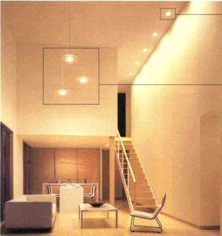
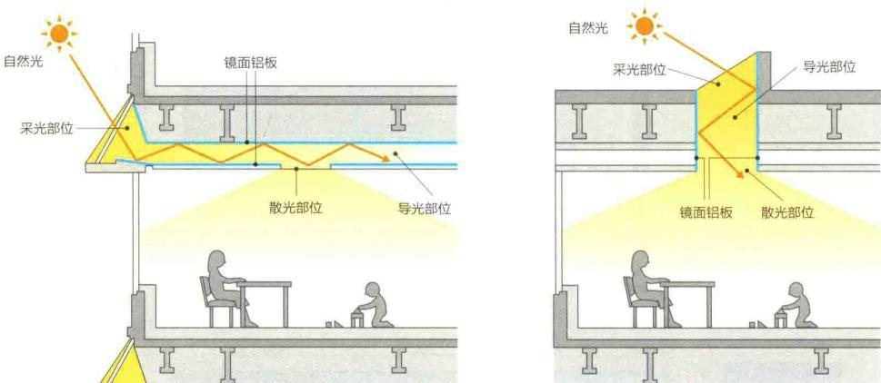
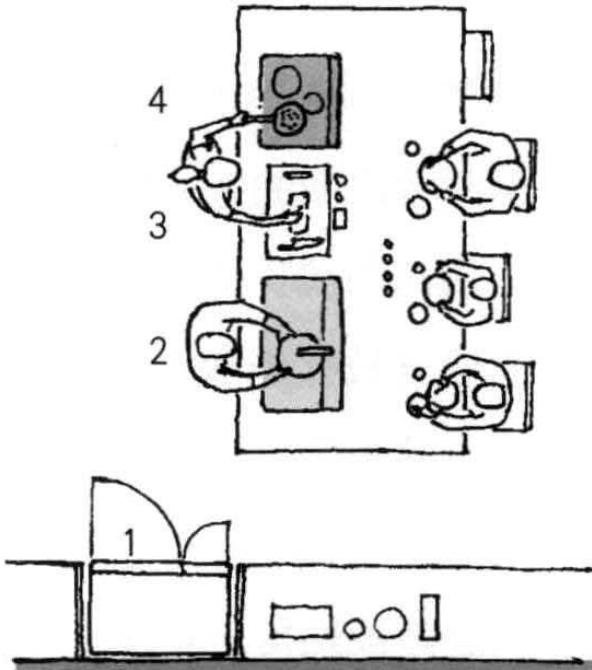
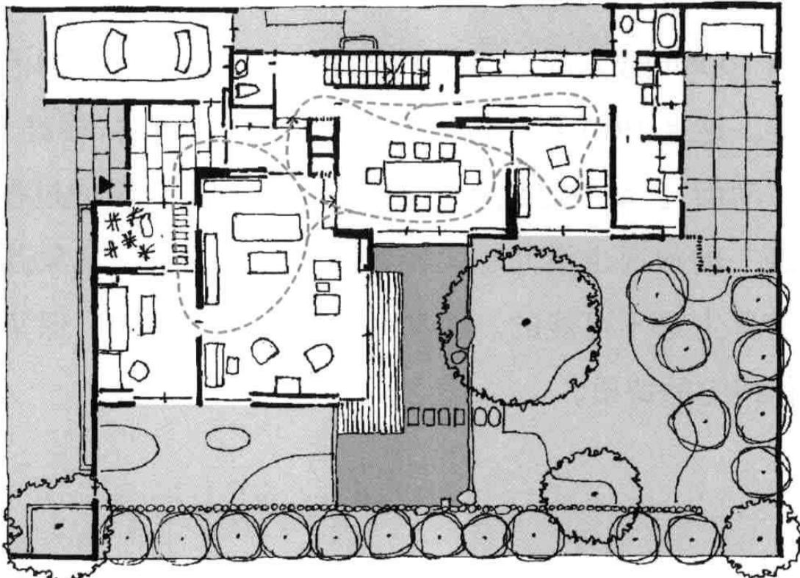
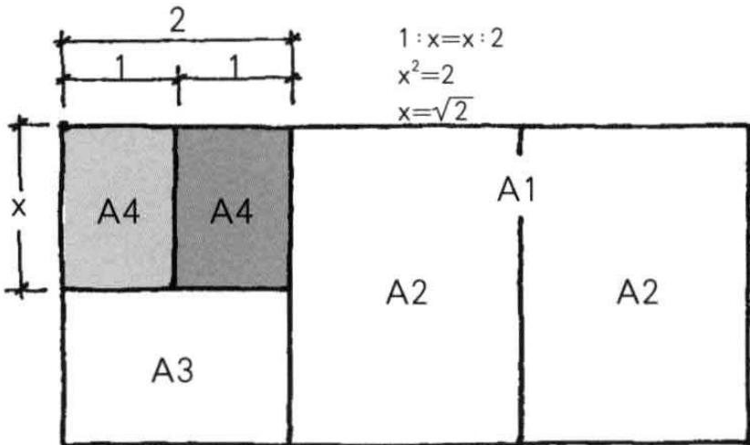
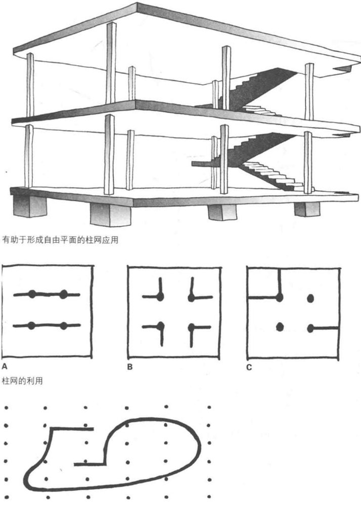
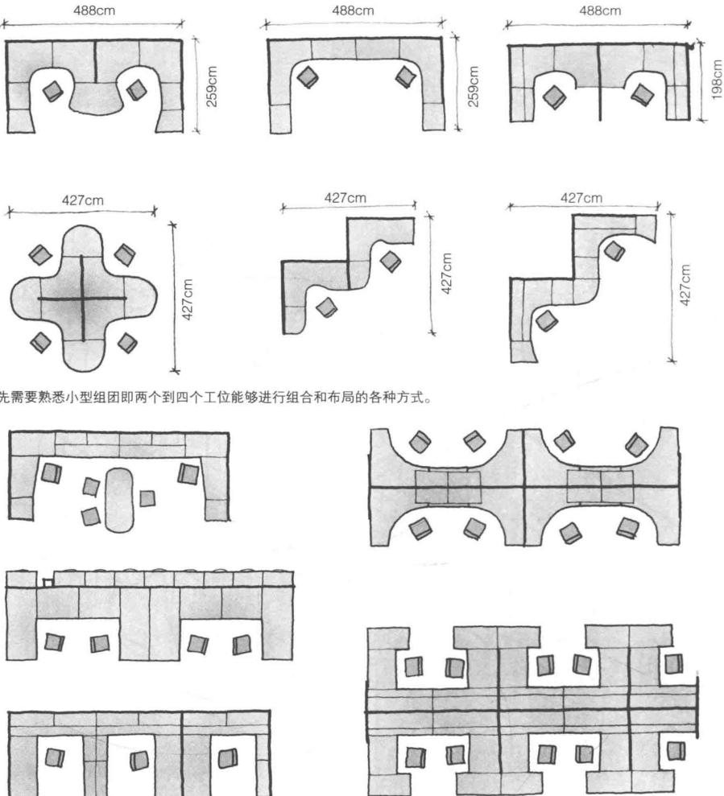
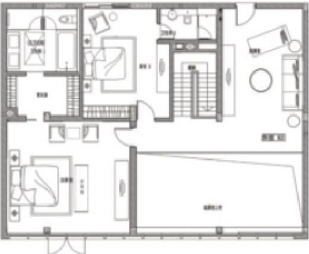
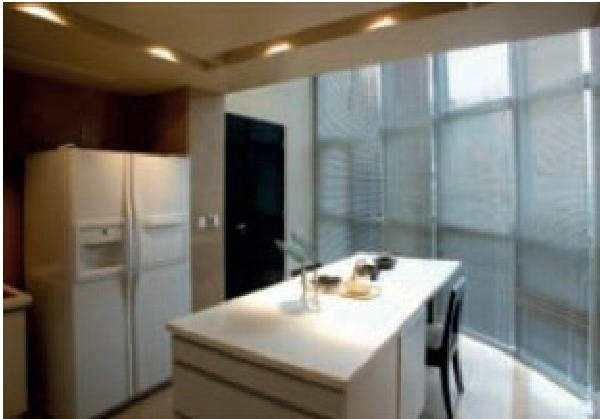
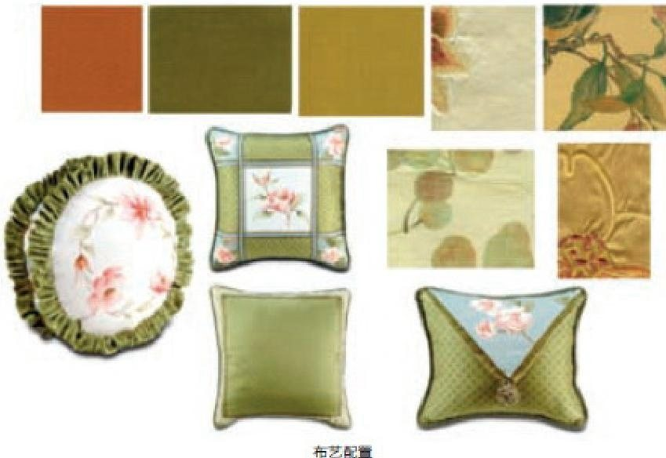
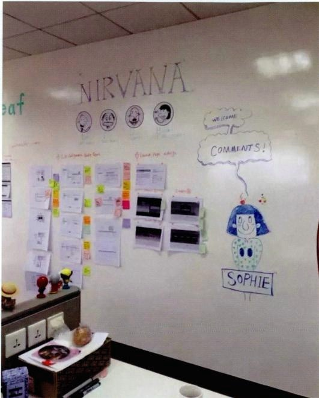
5. Source Bookshelf
Suggested reading order: 《室內設計基礎》 → 《住宅設計解剖書》 (an intuition for circulation and dimensions) → 《人體工程學與室內設計》 → 《圖解照明設計》 → 《設計師的材料清單》 → 《室內設計師必知的 100 個節點》.
Show 66 titles
**Reading Architectural Drawings** - 零基礎學建築識圖 **Construction Craft** - 室內裝飾裝修施工完全圖解教程 - 室內設計節點手冊：常用節點 - 室內設計節點手冊：酒店固定傢俱 - 材料收口 - 裝飾工藝解析：吊頂篇 - 裝飾工藝解析：地面篇 - 裝飾工藝解析：牆面篇 - 室內設計師必知的100個節點 **Materials** - 室內裝飾裝修材料應用與選購 - 室內設計材料選用實戰手冊 - 石材應用手冊 - 設計師的材料清單·室內篇 **Lighting** - 圖解照明設計 - 室內照明設計精品教程 - 室內燈光設計 - 室內設計師專用燈光設計手冊 - 室內設計師燈光設計細部解析 - 照明設計終極聖經 **Colour** - 家居色彩設計指南 - 設計師談家居色彩搭配 - 設計配色基礎 - 輕·重·緩·急：搭出耐看配色 **Drafting and Ergonomics** - 人體工程學與室內設計 - 住宅的設計尺寸剖析書 - 圖解住宅尺寸與格局設計 - 室內施工圖實戰教程 - 室內施工圖製圖標準 - 室內空間佈局與尺度設計 - 室內細部設計CAD圖集 - 室內設計尺寸關鍵術 - 室內設計數據手冊：空間與尺度 - 室內設計與人體工程學 - 家裝常用數據尺寸速查 - 工裝設計尺度數據手冊 - 人機工程學（第五版） **Designer Development** - 年輕設計師必修的七堂課 - 網紅室內設計師IP運營法則 - 裝修設計師談單簽單一課通 - 軟裝談單寶典 **Design Methods** - 住宅格局破解術 - 住宅格局解剖圖鑑 - 住宅設計剖析手冊 - 住宅設計解剖書 - 住得優雅：住宅設計的34個法則 - 圖解極簡主義設計 - 室內住宅設計圖解 - 室內空間設計手冊 - 室內設計·思維與方法 - 室內設計基礎 - 小家越住越大2 - 打造讓孩子自主學習的住宅 - 樓梯設計的9個法則 - 淺談家庭中央空調的使用 - 牆面設計 - 裝修設計解剖書 - 解構收納 - 設計中的設計 - 設計師要懂的心理學 - 室內精細化設計研究 **Soft Furnishings** - 傢俱設計資料圖集 - 室內設計風格圖文速查 - 軟裝改造解剖書 - 軟裝設計元素搭配手冊 - 軟裝設計師手冊 - 軟裝風格速查6. Study Cues
- Measure your room and draw its plan at 1:50, marking the furniture and the main circulation routes.
- Record your routes around your home for one day. Find where routes cross or take detours, and propose improvements.
- Design the lighting for your desk: which fittings, colour temperatures and illuminance levels would you use for ambient, task and accent lighting?
- Create a colour scheme for a living room using the four roles "background, main, supporting, accent", and note the area ratio of each.
- Compare the performance of marble and granite, and explain where each is suitable.
- Choose a style (for example New Chinese), list five key elements, and explain how to avoid it becoming a mere pile of symbols.
7. Each Book
Each book in the bookshelf is described below. Every title above links to its section.
零基礎學建築識圖
Scope. This is an introduction to reading architectural drawings. It teaches readers to move from projection and legends to site plans, floor plans, elevations, sections and external wall details. The later part also covers the legends and system diagrams of plumbing and drainage, HVAC and electrical construction drawings, which helps interior design students understand drawings from the upstream disciplines.
Main ideas
- Reading drawings is not only about "understanding" them. You also need to know how drawings are produced, the drafting standards, the features of each sheet and the rules of its layout.
- Drawing methods start with projection, then move on to drawing conventions and material legends.
- Architectural construction drawings are read in order: site plan, floor plan, elevation, section, external wall details.
- Plumbing, heating and electrics each have their own pipe and cable codes, equipment legends and system diagrams. You cannot force architectural legends onto them.
Methods
- First check the sheet size, title block, sign-off block and binding margin to confirm what type of drawing it is and which discipline it belongs to.
- Read architectural drawings in the order "site plan → floor plan → elevation → section → details". Do not skip pages and guess dimensions.
- For plumbing, heating and electrics, find the legend table and system numbers first, then match them to the pipes and cables on the plan.
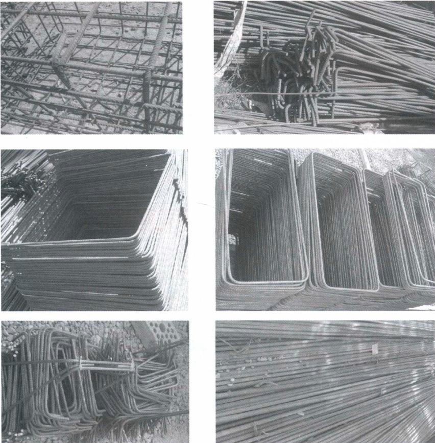
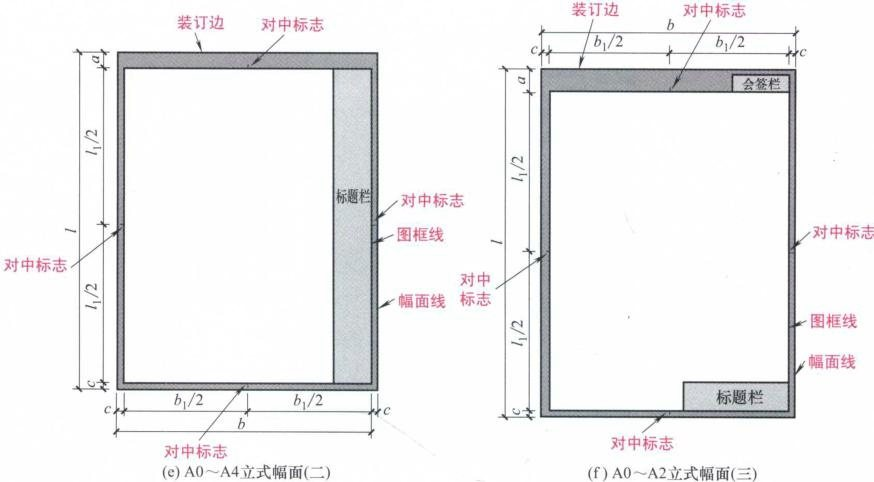
Study cues
- Take a set of house drawings and say what question the site plan, floor plan, elevation and section each answer.
- Why can you not work out the route of pipes on a plumbing drawing just from the wall lines on the architectural plan?
室內裝飾裝修施工完全圖解教程
Scope. This is an illustrated guide to the renovation process. It first explains contracting arrangements and examples of common styles, then orders the work by trade. Its focus is how walls, plumbing and electrics, masonry, carpentry, painting, installation and inspection link together, not a materials encyclopaedia or lighting calculations.
Main ideas
- Contracting arrangements include labour only, part package, labour and materials, and fixed-price packages. Each has a different structure of responsibility and cost.
- Styles can be mixed, but the whole design must be harmonious and unified. Each room cannot go its own way.
- The main line of construction is wall alterations, plumbing and electrical alterations, masonry, carpentry, painting, installation and inspection.
- Partition walls and load-bearing walls must be kept apart: the load-bearing walls shown in black on the drawing must not be demolished to change the layout.
Methods
- Before work starts, check against the furniture layout plan and mark which walls can be removed and which must stay.
- Inspect at each handover point in the sequence (walls finished, before and after plumbing and electrics, before carpentry starts). Do not wait until after painting to redo work.
- When explaining a scheme to a client, a style name is only a communication tool. In the end, check whether the materials, colours and furniture come together as one whole.
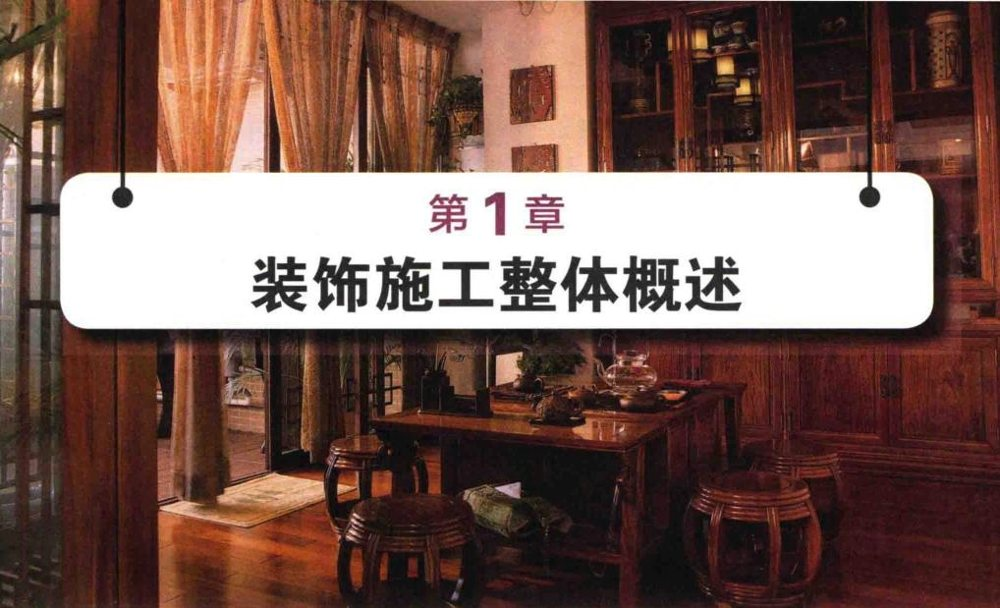
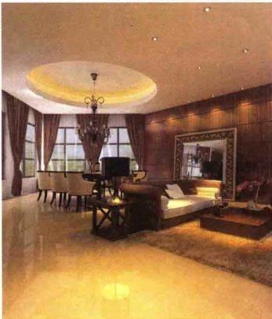
Study cues
- Put the seven trades in order for renovating your home, and give one reason why the order cannot be reversed.
- A client says "I want it modern, and Chinese, and country-style". How would you rewrite this as a single overall brief that can be built?
室內設計節點手冊：常用節點
Scope. This is a handbook of common finishing details. It uses 3D models and matching drawings to explain typical ways of building ceilings, floors, doors and light-gauge steel stud walls. It serves the question of whether construction drawings can go to tender and actually be built. It is not a style catalogue.
Main ideas
- An interior scheme must connect with the conditions set by the upstream disciplines before its construction drawings are good enough for tendering and building.
- Drawings must be accurate and also buildable. Being able to draw but lacking site experience is a common gap.
- Details are organised by location (ceilings, floors, doors and so on), with the key points marked.
- Each detail shows a 3D view next to the drawing, which saves the time of imagining the construction from flat lines alone.
Methods
- Before drawing a detail, ask: can I clearly state the substrate, the finish layer, the fixing method, access for maintenance and the cost?
- Look at the 3D view against the section once, to confirm which layer of material each line stands for.
- Regional craft practices and industry standards are not uniform, so when reading a detail, check it against the material thicknesses and site conditions of your own project.
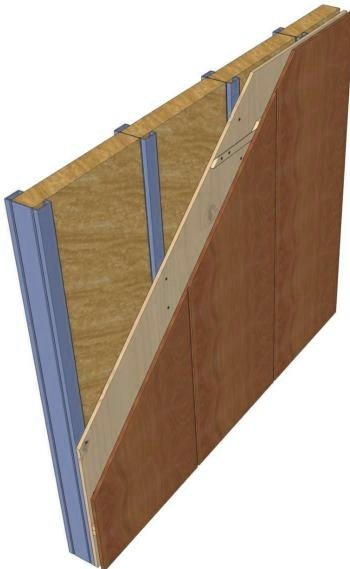
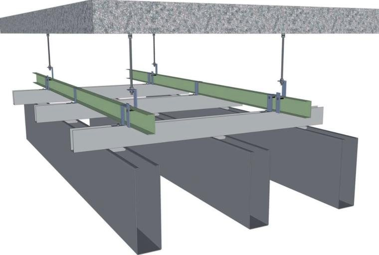
Study cues
- Choose a ceiling detail and write in your own words what the substrate, the face panel and the edge trim are.
- Why is "a beautifully drawn drawing" not enough to guarantee that a construction drawing can go to tender?
室內設計節點手冊：酒店固定傢俱
Scope. This volume deals only with hotel built-in furniture: wardrobes, minibars, desks, vanity units and other furniture fixed to the building. It works from function, construction and installation. It differs both from catalogues of loose furniture and from general home renovation details.
Main ideas
- Hotel built-in furniture has its own concept, importance and special features. It cannot be treated as a scaled-down home cabinet.
- A wardrobe has to handle hanging, a safe, luggage, a full-length mirror, ironing and lighting all at once.
- A minibar must accommodate refrigeration, a kettle, a coffee machine, crockery, lighting and heat dissipation.
- A vanity unit must combine the basin, tap, mirror, demisting, lighting and sockets into one whole that can be installed.
Methods
- First list the functions the piece must perform, then decide on the construction and which case examples to follow.
- For equipment (safe, minibar fridge, electrical box), leave space for ventilation, maintenance access and operation.
- Read each case example on three levels, "function, construction, installation". Do not just copy the appearance.
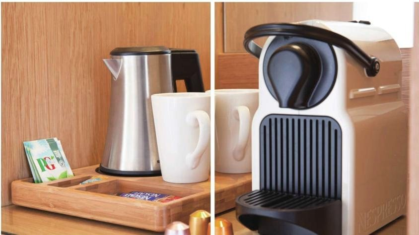
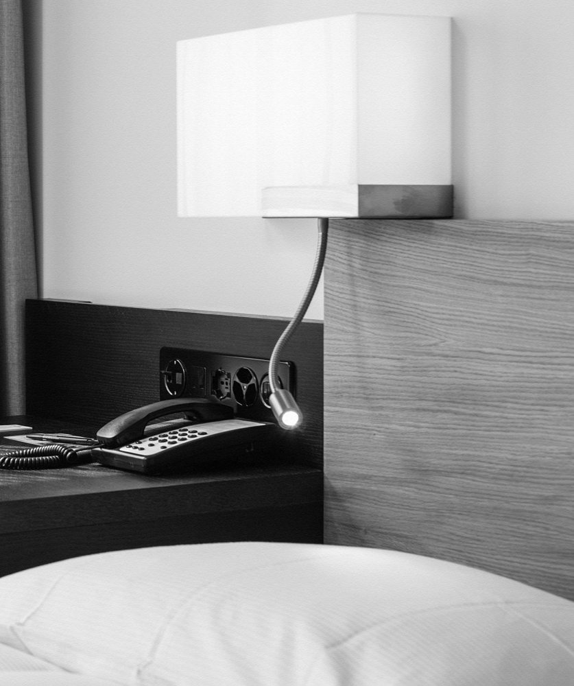
Study cues
- Compared with a home wardrobe, what extra equipment must be designed together with a hotel wardrobe?
- Why must a minibar fridge not be pushed tight against the back of the cabinet?
材料收口
Scope. This is a collection of details for junctions between materials. It concentrates on how to finish edges, leave gaps and fix things where two materials meet. It does not cover where materials come from or style movements; instead it draws each edge trim as a section and a site photo you can compare.
Main ideas
- An edge trim is a relationship between finished surfaces: glass and concrete, tile and mirror, stone and other finishes all need to be designed individually.
- When drawing, fix the outermost finish line first, then work back inwards to the substrate.
- Details such as mirror cabinets, LED strips, acrylic and basins must give even light and also be removable for replacement.
- Line weights are layered: walls are heaviest, cut stone is medium, and everything else is thin, so line weight expresses the layers.
Methods
- Ask three questions of every edge trim: which material overlaps which, where does the gap go, and can it be taken apart later?
- Draw external corners, wet areas and light coves separately. Do not use one "flush trim" to deal with everything.
- Compare the section with the site photo beside the drawing, and check that the substrate is level and that fire protection and fixings are specified.
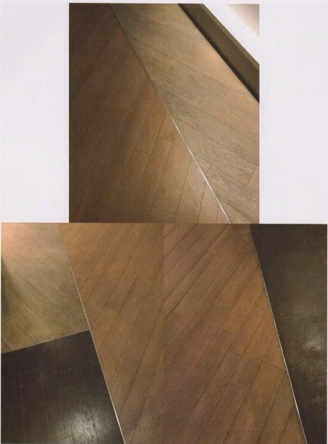
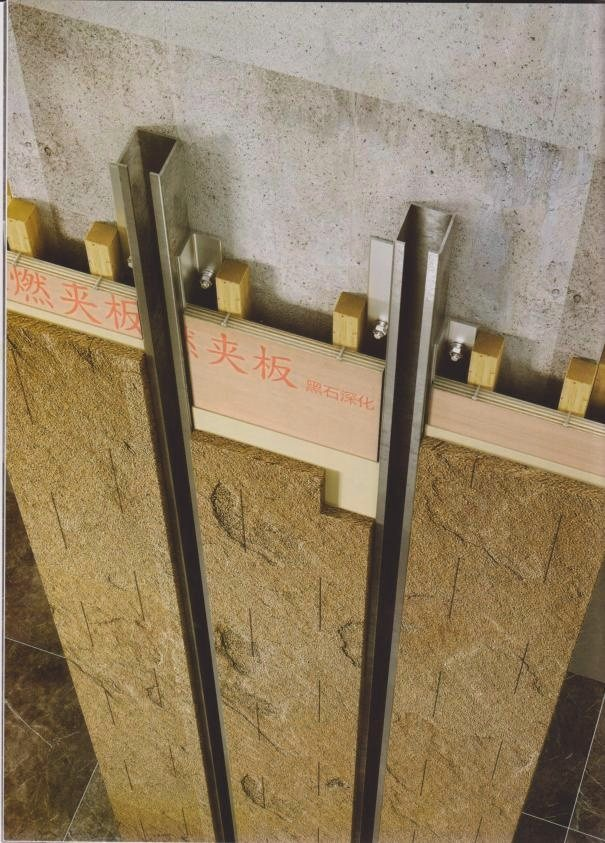
Study cues
- When two materials are finished flush, why is a third material often added as a transition?
- When drawing the LED strip of a mirror cabinet, what maintenance condition must you meet besides "looking even"?
裝飾工藝解析：吊頂篇
Scope. This volume is devoted to ceiling work. It presents plaster-moulding light coves, curved light coves, internal corner mouldings, translucent stretch membranes and more as detail drawings plus 3D diagrams. It deals only with ceiling construction and does not replace walls, floors or calculations of light distribution.
Main ideas
- A ceiling detail must make clear how the hangers, main and secondary runners, backing board and finished surface relate.
- Light coves come in different forms (plaster moulding, curved, concealed LED strip), and their joints must run straight and smooth.
- Emulsion paint meeting a translucent stretch membrane and a translucent panel meeting aluminium panels are different edge-trim problems.
- Timber backing needs fire-retardant paint, and plasterboard joints and screw holes must be included in the finishing sequence.
Methods
- When reading each detail, check it once in five steps: "fixing → runners → backing → finish → light cove".
- Record straight and curved light coves separately; curved ones demand even smoother joints.
- For a translucent ceiling, first confirm where the light source is hidden and whether the panels can be removed for replacement, then draw the form.
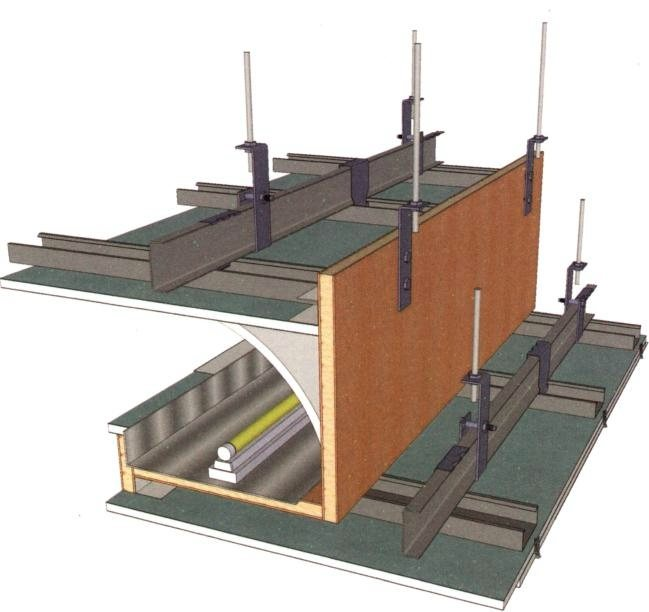
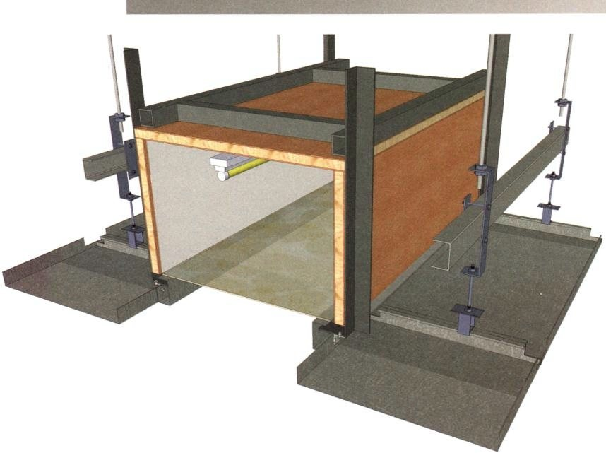
Study cues
- In five steps, describe the layers of a plasterboard ceiling from its fixing to the slab up to the emulsion paint.
- Where a translucent stretch membrane meets an ordinary emulsion-painted ceiling, what extra things must you confirm?
裝飾工藝解析：地面篇
Scope. This volume is devoted to floor work. It covers floor tiles, stone, carpet, solid wood flooring, bathrooms and showers, and epoxy terrazzo over underfloor heating. The focus is on the layers of laying and how two flooring materials meet.
Main ideas
- Floor tiles, mosaic, stone and wooden flooring each have their own base, levelling layer, adhesive and finished surface.
- Junctions between stone and carpet, or between wooden flooring and floor tiles, need an edge trim. The two finishes must not simply butt into each other.
- Bathroom and shower floors need separate treatment for waterproofing, drainage and stone laying.
- On a heated floor, the screed layer, heating pipes and finish form one construction. It cannot be laid like an ordinary slab.
Methods
- First draw the layers of construction above the slab, then choose the finish material.
- Give every junction an edge trim (inlay strip, stone threshold or carpet gripper), and state which goes first.
- After the stone is laid, plan for protective sealing, grouting and maintenance; in wet areas add waterproofing and drainage.
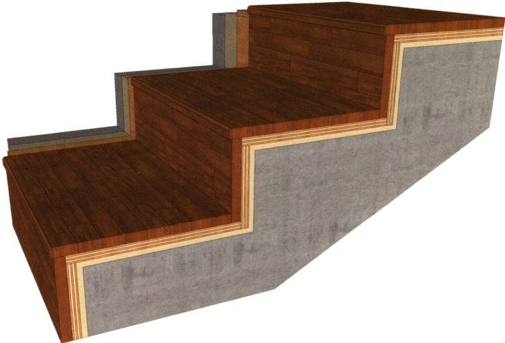
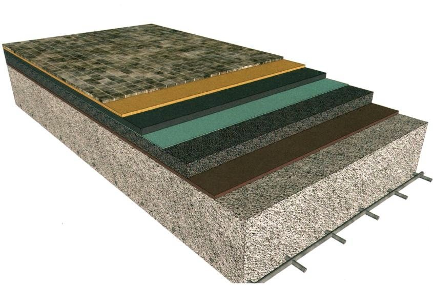
Study cues
- Where a stone floor meets carpet, what problem must the trim strip solve?
- Why can a shower floor not simply copy the stone laying of a living room?
裝飾工藝解析：牆面篇
Scope. This volume is devoted to wall work. It covers emulsion paint on light-gauge steel stud partitions, and how stone, wood veneer, glass and wallpaper meet each other. It is kept separate from the ceiling and floor volumes, so you can look up construction by surface.
Main ideas
- Emulsion paint on a concrete wall and on a steel stud wall needs a different substrate and plastering process.
- Stone can be dry-hung, and you must deal with external corners, concealed doors and junctions with wood veneer and glass.
- Wood veneer meeting glass and wood veneer meeting wallpaper are different edge trims.
- Board joints, screw holes and protection of the finished surface are written into the process, not just drawn as one finish line.
Methods
- First decide whether the wall is masonry, concrete or steel stud, then choose the finishing method.
- Where two finishes meet, draw where the cover strip, the gap and each substrate end up.
- For dry-hung stone, check the brackets, steel angles and reinforcement. Do not draw dry-hanging as if it were glued.
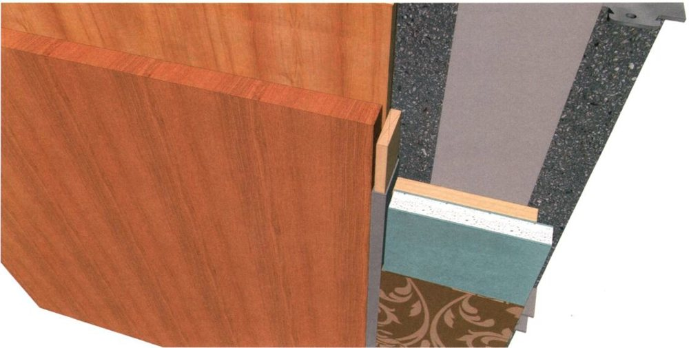
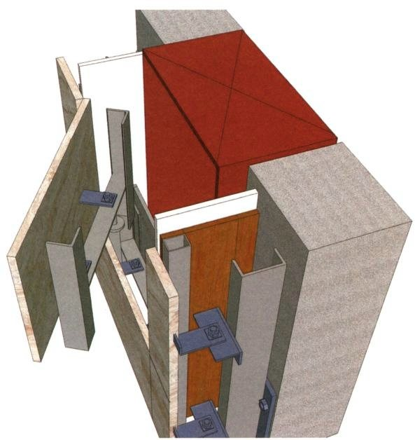
Study cues
- When painting a light-gauge steel stud partition with emulsion, why do board joints and screw holes need separate treatment?
- What differences should you see on the drawing between dry-hung stone and glued stone?
室內設計師必知的100個節點
Scope. This is a handbook of details organised by location: ceilings, walls and columns, floors, junctions, doors and windows, stairs and bathrooms. Each detail is checked against four criteria (compliance, safety, rationality and suitability), rather than just offering an attractive detail drawing.
Main ideas
- A detail is first checked for compliance: does it meet the standards and codes?
- Then for safety: could the materials, construction or use injure people, catch fire or suffer from damp?
- Rationality means whether the craft can actually achieve it; suitability means whether the cost and future maintenance are in proportion.
- Locations covered include ceilings, wall and column surfaces, floors, wall-to-ceiling and wall-to-floor junctions, curtain wall junctions, doors and windows, stair balustrades and bathrooms.
Methods
- After drawing a detail, check it yourself by writing one sentence each on "compliance, safety, rationality, suitability".
- In wet rooms, avoid timber battens and timber backing; for mirrors, bathtubs and washbasins, allow for secure fixing and maintenance access.
- Review door rebates and handles against the lock and the way the door opens. Do not just draw the elevation.
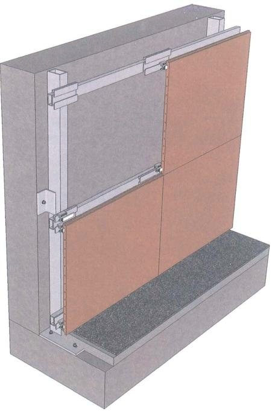
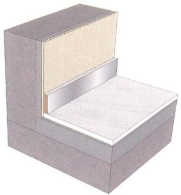
Study cues
- Check a washbasin mirror detail with the four words, and for each give one reason it could fail.
- Why must the panel of an enclosed bathtub allow for maintenance access, not just appearance?
室內裝飾裝修材料應用與選購
Scope. This book is about recognising and buying materials. It explains how finishing materials are classified, what to prepare before renovation, and the items commonly left out of budgets. It helps you decide what to buy. It does not replace detail drawings, and it does not cover light distribution.
Main ideas
- Materials can be classified by substance, function or location of use; in the trade they are more often divided into main materials and auxiliary materials.
- Plumbing and electrics, masonry, carpentry, painting and soft furnishings each have their own material list.
- Before renovation, settle the style and have renderings and construction drawings ready.
- Budgets tend to go wrong through vague product names and specifications, missing items, high wastage allowances, items split and charged twice, and items that come from nowhere.
Methods
- When making a list, separate main materials from auxiliary ones, and write the product name, specification and who buys it.
- When checking a budget, ask of each item: is it charged twice, and is the wastage explained?
- Appliances and loose furniture are not main finishing materials, but the overall design must leave room and budget for them.
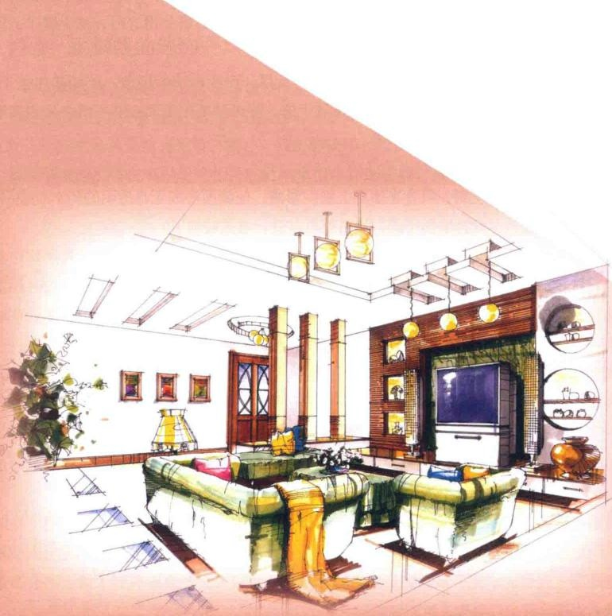
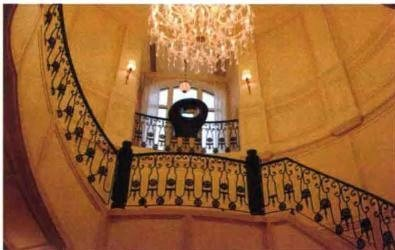
Study cues
- Sort "wooden flooring, cement, wallpaper, curtains" into main materials, auxiliary materials or soft furnishings, and give one reason for each.
- If a budget only says "one batch of stone", which three things would you ask about before signing?
室內設計材料選用實戰手冊
Scope. This is a practical handbook for choosing materials. It gives the types, uses and case examples for categories such as decorative boards and stone. It teaches where a type of material suits and how to combine it, and it is not a complete guide to the construction sequence.
Main ideas
- Wood-grain veneer boards are easy to work and have a clear decorative effect. Choose lighter or darker tones according to the area and the daylight.
- Boards with special finishes move away from traditional wood grain. They suit feature areas and should be used more carefully over large areas.
- Structural boards are the base for joinery, and their types and quantities should be controlled by location.
- The stone chapter begins with the natural veining of marble and other stones, stressing variation in veining and where each stone suits.
Methods
- When choosing veneer boards, look at the colour, the daylight and the furniture they will go with at the same time, so large areas do not become too loud.
- Choose structural boards by location and control the quantity. Do not use substrate materials as finishes.
- Record each case example in three columns, "material, location, spatial effect", so you can draw on it later.
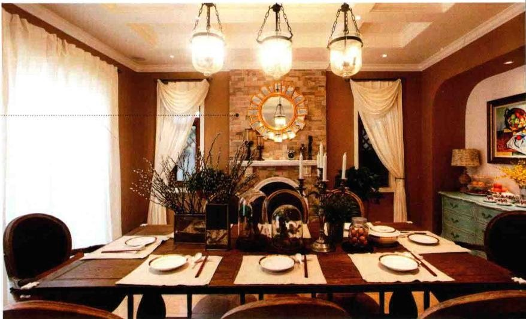
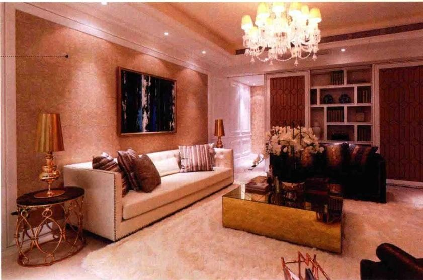
Study cues
- Why is it unwise to cover a small bedroom without restraint in reddish wood-grain veneer board?
- How should structural boards and veneer boards be labelled separately on drawings?
石材應用手冊
Author: Liu Hongzhi
Scope. This handbook is devoted to stone. It runs from classification, surface treatments and combinations to image libraries of marble, granite and imitation stone. It treats stone as one category of material to choose and use, and does not cover boards in general or offer a full theory of colour schemes.
Main ideas
- Stone has classifications, properties, quality criteria and common surface treatments.
- Different spaces (parts of a home, curtain walls) set different specifications and installation requirements for stone.
- The image library organises marble and granite by colour family, and includes inlaid patterns and special stones.
- When choosing, look at radioactivity, maintenance, and installation and inspection together, not just photos of the veining.
Methods
- First decide the location and surface effect (polished, waterjet, sandblasted and so on), then match colour and veining in the image library.
- Check that the stone meets quality criteria such as radioactivity before discussing its pattern.
- Record laying, maintenance and inlay work separately, so that material choice and installation do not go their own ways.
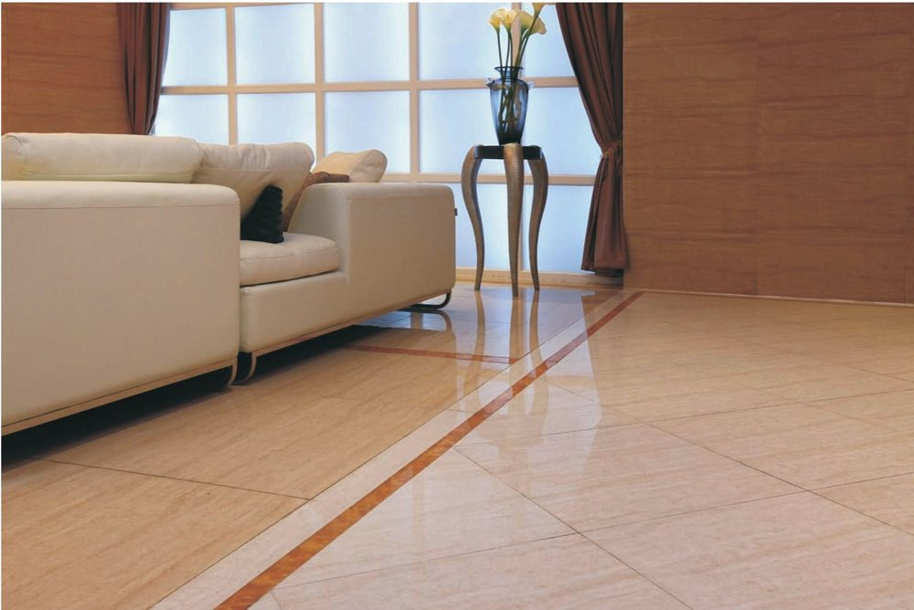
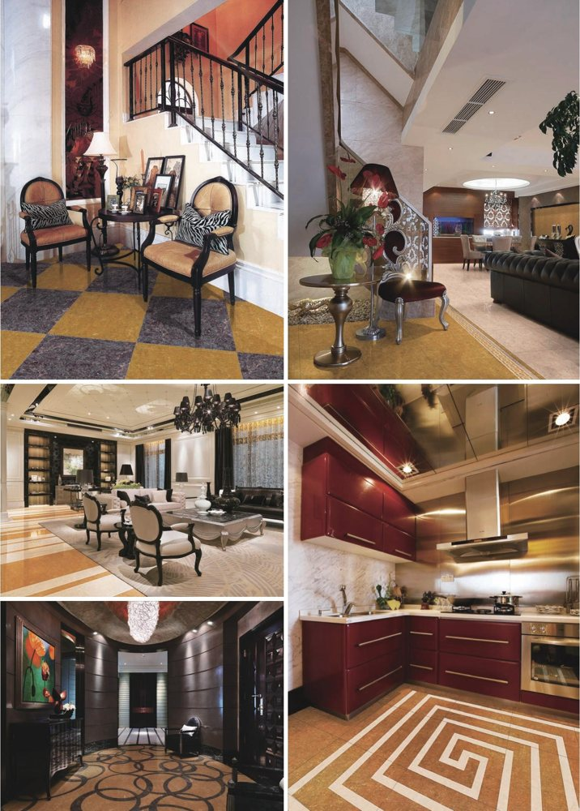
Study cues
- For the same stone, how do polished and waterjet finishes change the way it looks and feels?
- Why should a stone image library not be used only as a pattern catalogue, without looking at quality criteria and maintenance?
設計師的材料清單·室內篇
Scope. This is a list of interior materials for designers to look up. Each material is written up under introduction, performance, process categories, common specifications, price, design notes, brands and installation points. It is a worksheet for choosing materials, not a history of styles or a table of body dimensions.
Main ideas
- For every material, look at both its performance characteristics and its product process categories.
- Common specifications, price range and brands are information to weigh side by side when choosing. Do not keep only the photos of the effect.
- Design notes and installation points decide whether a material can be used in a given location.
- Case examples (such as factory conversions, clubhouses and hotels) show the material's role in real projects.
Methods
- Fill in the same table for every candidate material: performance, specifications, notes, installation points.
- For surface effects (such as hand-rubbed finishes on joinery), state how the process affects the feel and the wood grain.
- Separate flooring materials by where they are used; for example, sports flooring and anti-static flooring are not interchangeable.
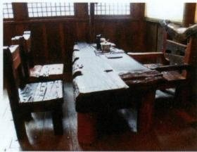
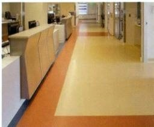
Study cues
- If you only see a photo of a material, which four items in the list would you still need before deciding?
- Why can a gym floor and a plant room floor not both be handled with the same "nice-looking wooden flooring"?
圖解照明設計
Scope. This is an illustrated course in lighting design. It runs from terminology, light sources and luminaire catalogues to installation notes, key points for each room and energy saving. It deals with how light is planned and installed, not with buying materials or styling soft furnishings.
Main ideas
- You need to master the basic lighting terms, units, light sources and types of luminaire before you can read product catalogues.
- Scheme designers and lighting designers work on lighting plans in different depth, but both must end up with installation.
- Different rooms (living and dining room, kitchen, make-up area, children's room, bedroom, corridor, stairs, entrance hall) have different priorities.
- Energy saving can consider daylight, LEDs and "the feeling of brightness" together, not just changing bulbs.
Methods
- When reading a luminaire catalogue, check the terms first, then decide the type and installation position.
- For each room, list the tasks that must be visible (make-up, going up and down stairs, the corridor at night), then choose the lights.
- For uplights, check surface temperature, combustible materials and maintenance, not just atmosphere.
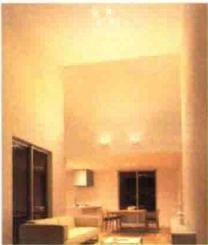
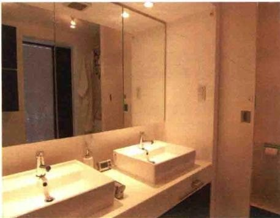
Study cues
- Why should the lighting in a children's room be adjustable as the child grows, rather than being a single main light?
- For an uplight, which two safety issues must you check besides how it looks?
室內照明設計精品教程
Scope. This book approaches lighting through human perception (sleep, light colour, brightness and the vision of older people) and then moves on to lighting plans for homes and to DIALux. It is a course on light and perception, not a catalogue of luminaires or a book of colour swatches.
Main ideas
- Light affects sleep rhythms; bright white light at night disturbs a normal daily routine.
- Light colour and brightness must be paired: whiter light should be brighter and warmer light dimmer for people to feel comfortable.
- Brightness contrast, adaptation to brightness and interior colour must be considered together for objects to look right.
- Lighting plans for homes can be upgraded, with DIALux used to support the process.
Methods
- First separate "light for doing things" from "light for resting", then choose the light colour and brightness.
- Use simple diagrams to compare downlight angles: pointing straight down and angled give different wall brightness.
- When designing rooms for older people or children, write illuminance, glare and adjustability into the plan, not just the look of the fittings.
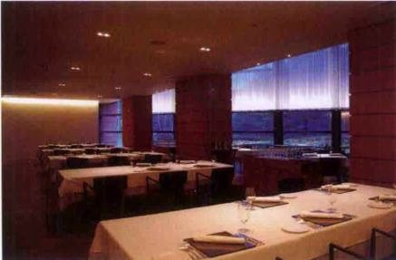
Study cues
- Why are "whiter light for cooking and warmer light for eating" two different matters?
- If all the downlights in a sloping ceiling point straight down, what happens to the brightness of the walls?
室內燈光設計
Scope. This book gives equal weight to lighting and to spatial case studies. It discusses users, vision, natural cycles and psychology, then moves on to the lighting effects of specific places. It stresses that efficient lighting must still serve vision and the expression of space. It is not a catalogue of energy-saving products.
Main ideas
- Lighting design must start from the user. Vision is not only about the eyes; it also involves psychology.
- Factors that affect vision include natural cycles and psychological responses. You cannot just calculate output efficiency.
- Efficient application means tasks are visible, light is even where it is needed, glare is controlled, and colours and skin tones look natural.
- The case studies create atmosphere through light fittings, candlelight and turns in the space together. Lighting is part of the space.
Methods
- First write down what the space should let people do and feel, then choose the lights.
- Check glare and screen reflections, rather than only chasing "brighter and more energy-saving".
- When reading the case studies, note separately which layer is functional light and which is atmosphere.
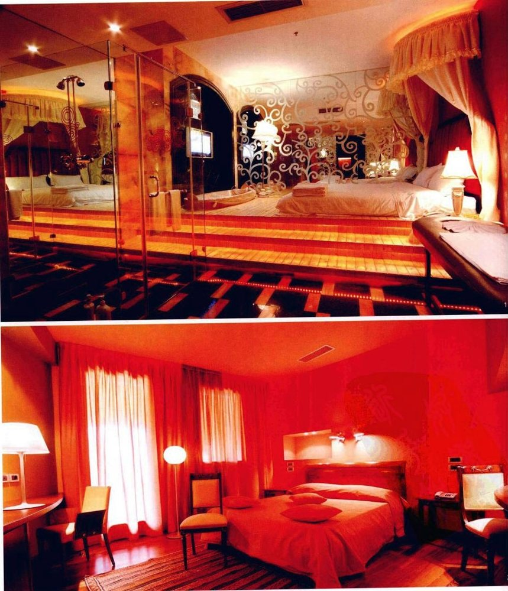
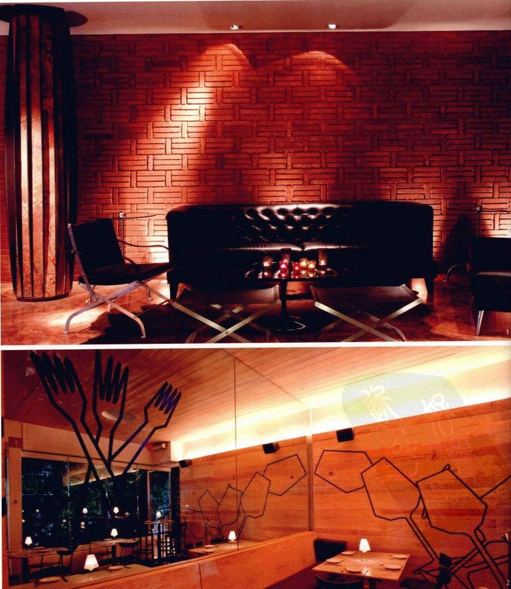
Study cues
- Why might "saving electricity" and "seeing this task clearly" not be the same goal?
- Look at a restaurant and point out one piece of functional lighting and one light that only creates atmosphere.
室內設計師專用燈光設計手冊
Original title: The Lighting Bible
Scope. This is a lighting handbook for interior designers. It runs from the basics of successful lighting, reflection, light and shadow, and mood to decorative fittings and each part of the home. It teaches how to use light in layers. It is not an annual of commercial projects, nor a standard for electrical construction drawings.
Main ideas
- Light comes either directly or reflected from surfaces; the eye is drawn to the brightest spot.
- Reflection can create diffuse light: light aimed up at the ceiling bounces back, which suits rooms that need soft light with few shadows.
- Light and shadow matter as much as the shape of the fittings; a space without shadows looks pale and lifeless.
- Home lighting should be layered and switchable by scene, not with every light on at once.
Methods
- First choose the effect and position of each light source, then sort functional light, accent light and decorative fittings into layers.
- For lights beside a mirror, consider which way the reflected light falls on the face, and prefer adjustable light.
- In high-ceilinged spaces, use the distribution of light and dimming to give both grandeur and intimacy.
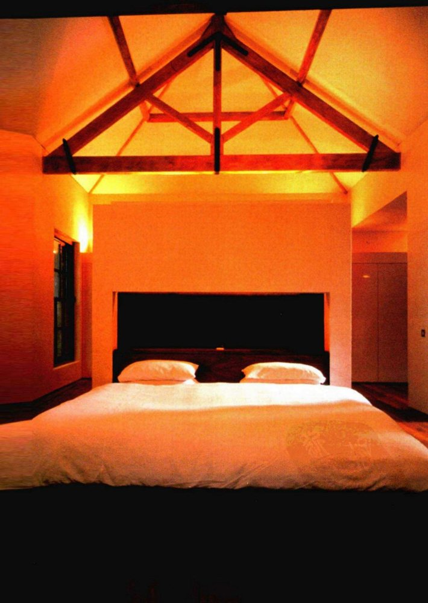
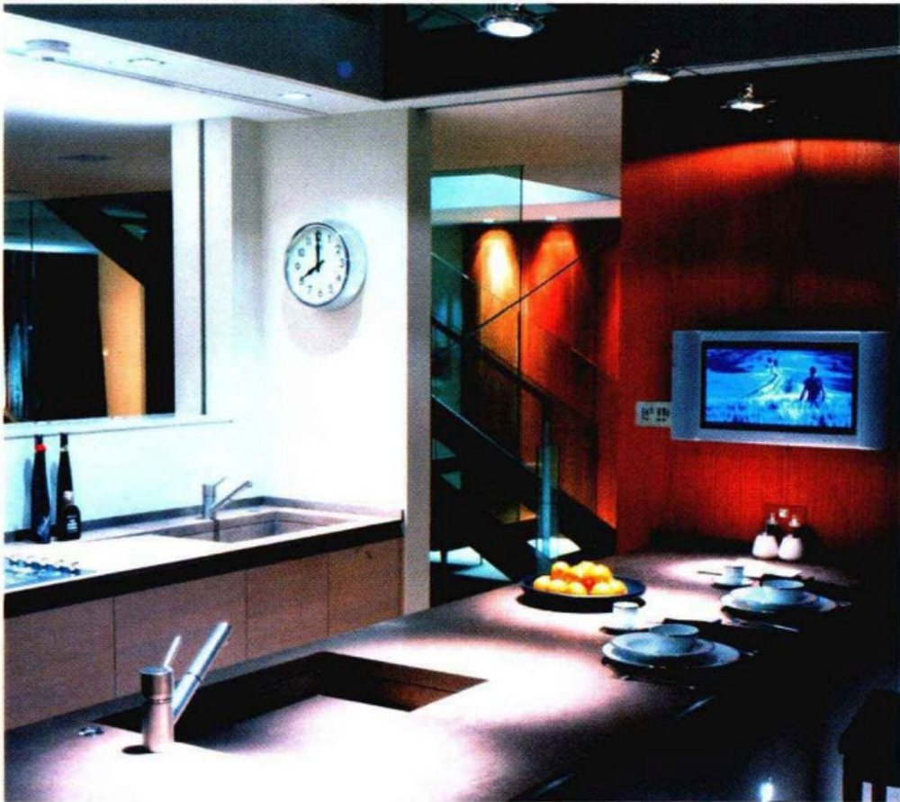
Study cues
- For a home studio with few shadows, why is light often aimed at the ceiling rather than at the desk?
- For the light in front of a bathroom mirror, should you check "how bright it is" or "where the reflection falls"?
室內設計師燈光設計細部解析
Scope. This is a collection of lighting detail case studies for commercial spaces. Each project is written up by location, materials, lighting features and lighting effect. It offers lighting strategies from built spaces. It is not a course on residential illuminance, nor a materials handbook.
Main ideas
- Each case study treats the lighting features, the details and the final effect separately.
- In spaces such as shopping mall atriums, light fittings and material transitions join the floors into one continuous whole.
- In retail, exhibition halls, pharmacies, offices and so on, lighting follows the zoning of the plan, not just a grid of ceiling lights.
- Materials (metal, perforated panels, lining boards) change how light reads in the space.
Methods
- Read each case study with four fixed columns: place, materials, lighting method, intended effect.
- When looking at an atrium or double-height space, check both the horizontal sight lines and the light in the vertical direction.
- In offices, plan the light zone by zone: entrance, open-plan office, technical and service areas.
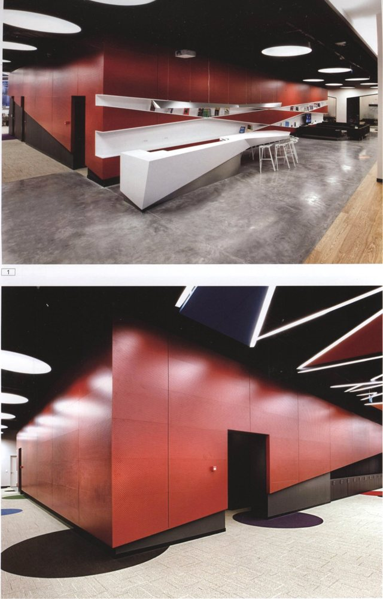
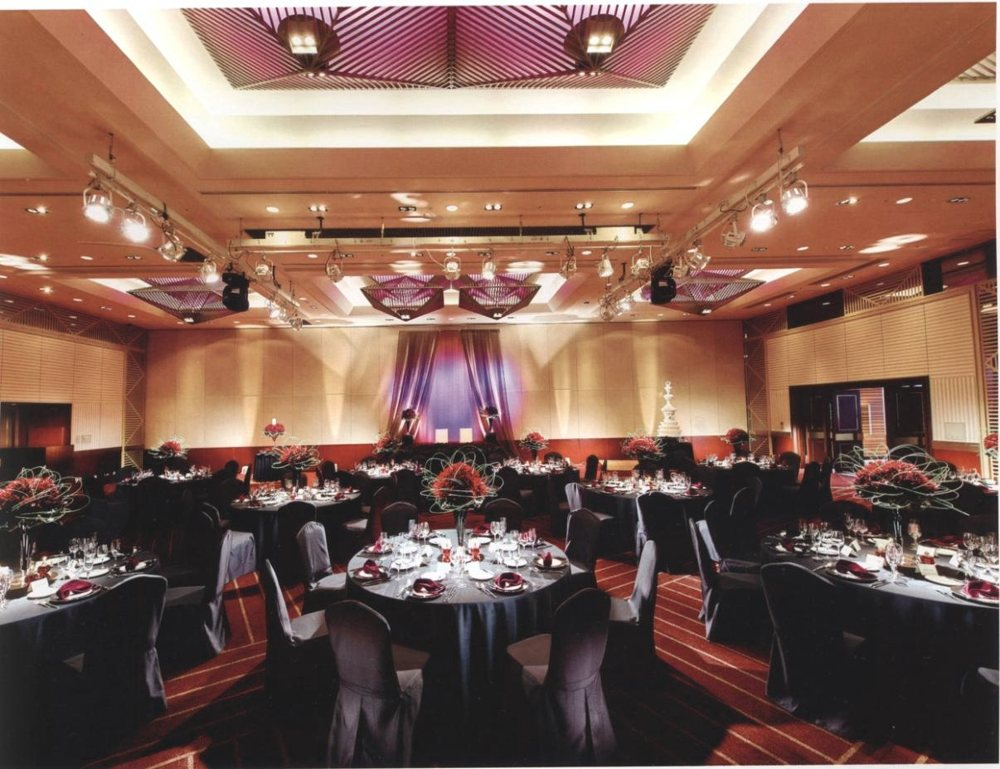
Study cues
- Why should each floor of a mall atrium not do its own lighting?
- Choose a commercial case study and say in one sentence how the materials take part in the lighting effect.
照明設計終極聖經
Scope. This is a question-and-answer handbook on residential lighting. It first takes apart common mistakes, then covers light sources, lighting methods, layout, commercial applications, and maintenance and safety. It teaches through "mistake and correction", unlike photo books of projects or tables of ergonomic dimensions.
Main ideas
- Wattage does not equal brightness; whether a light saves energy depends on its luminous efficacy, not its name.
- Accent lighting and supplementary lighting should be on separate circuits, so you do not end up with many fittings that cannot be used separately.
- Light sources, lighting methods, layout, and maintenance and safety are separate sets of key issues.
- Shared spaces such as the living room should have fewer main lights and more indirect light, planned together with daylight.
Methods
- When buying lights, read the luminous flux and efficacy on the packaging first; do not judge brightness by wattage.
- Divide every space into at least a few circuits that can be switched separately.
- Check bathroom damp, the weight a pendant hangs from, safety in children's rooms and how fittings are cleaned before deciding on the look.
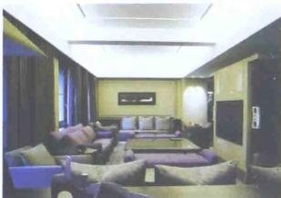
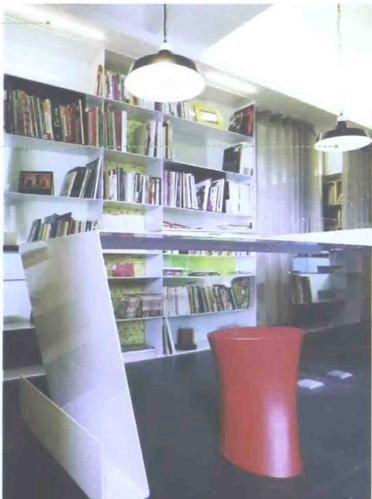
Study cues
- Why can you not conclude directly from "higher wattage" that "this light is brighter"?
- If a living room uses the same set of lights for reading, watching TV and parties, what does it lose?
家居色彩設計指南
Scope. This is a guide to home colour schemes. It uses attributes such as hue and value to explain warm and cool, contrast and the impression a space gives. It is a colour book that uses interior photos as examples. It does not teach how to install light fittings or how materials are built.
Main ideas
- Colour has attributes such as hue and value; hues can be further divided into cool and warm colours.
- Black, white and grey go with most tones; the book treats green and purple-red as neutral.
- A small difference in value makes a space feel stable; a large difference makes it livelier.
- A colour scheme must control area: stimulating colours should cover small areas, with white and similar colours used to adjust the tension.
Methods
- First set a warm or cool base, then add small areas of contrasting colour, so that not every colour tries to be the star.
- Use value, not just colour names, to judge whether something will be "too loud".
- Looking at the colour swatches and room photos, write down the role of the main colour, the supporting colour and the white space.
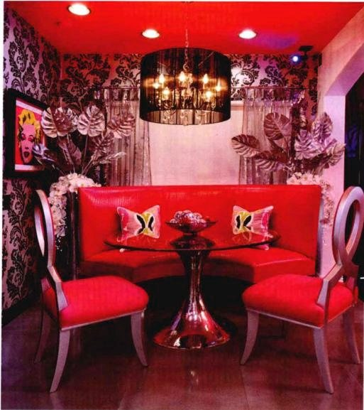
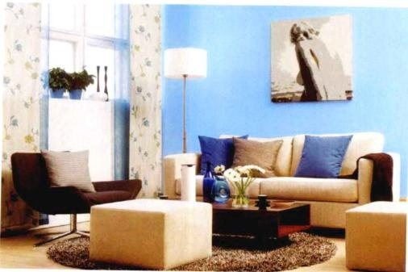
Study cues
- For the same blue, how does the feeling of the space differ when its value is raised or lowered?
- Why is a large area of pure red tiring, while a small area of red can stay?
設計師談家居色彩搭配
Scope. This book discusses what makes a home colour scheme successful: look at the relationships between hues, the use of the space and the users, then match them to the impression you want. It is a book about judging colour schemes, not a lighting handbook or a catalogue of historical styles.
Main ideas
- Neighbouring hues are more restrained and contrasting hues more energetic; schemes are steadier when the attributes are close.
- A successful scheme follows the basic principles of colour and considers who will use these objects.
- The use of the space, the characteristics of its users and the spatial feeling you want to adjust all change the scheme.
- The scheme must match the intended impression, for example fresh, heavy, natural or luxurious. More colours is not the goal.
Methods
- First write down the impression the room needs, then choose hues and tones, rather than picking favourite colour cards first.
- Test bedrooms, activity spaces and older users separately: the same set of highly saturated warm colours does not work everywhere.
- Compare two schemes side by side and point out whether hue, value or saturation causes the difference.
Study cues
- Write "fresh" and "heavy" each as a tonal strategy, not just as a single colour name.
- Why should a children's room and a workroom not casually swap the same colour scheme?
設計配色基礎
Scope. This is a basic reader on colour schemes, running from HSB and two- and three-colour relationships to the area of the main colour. Many of its examples come from graphic design (business cards, for example) and train you to use few colours precisely. It is not a catalogue of home soft furnishings, nor a course on lighting colour temperature.
Main ideas
- Use few colours. The book takes "no more than three colours" as the starting principle.
- HSB separates hue, saturation and brightness, which helps you describe how one blue differs from another.
- Two colours are the basis of any combination: white and black both change how present the main colour feels.
- The main colour can set the character of a piece, but the principle of area must still be weighed against the needs of reading and communication.
Methods
- In the software, use the HSB sliders to adjust hue, saturation and brightness separately, instead of clicking around the colour wheel at random.
- For each piece, set one main colour first, then decide whether the second and third colours support it or contrast with it.
- Check whether white or black is in fact already a colour, rather than treating it as "no colour".
Study cues
- Use HSB to describe the difference between "very blue but greyish" and "very blue and very bright".
- Once black is added to a business card based on red, why does the role of white change?
輕·重·緩·急：搭出耐看配色
Scope. This book uses the lightness and heaviness, warmth and coolness, and loudness and quietness of value, chroma and hue to explain how to build home colour schemes that stay pleasing. It is a method for colour in space, not pigment chemistry, nor a handbook on arranging light fittings.
Main ideas
- The three attributes of colour are hue, value and chroma; value directly affects lightness and heaviness, and whether a space seems to expand or shrink.
- Paired opposites (light and heavy, warm and cool, loud and quiet, active and passive) can be used as directions for a colour scheme, not just as adjectives.
- Theme colours, supporting colours, neighbouring colours and contrasting colours have different jobs, and their areas must not let the supporting colours upstage the theme.
- Saturation and accent colours create focal points while keeping the whole pleasing over time.
Methods
- First set the theme colour. Separate the supporting colours from it in value, chroma or hue, and control their area.
- Bedrooms and studies should use neighbouring colours; increase hue contrast only when you want energy.
- Use "light" high-value colours and "heavy" low-value colours to adjust how high or low a space feels, rather than relying only on the ceiling design.
Study cues
- How should the theme colour and the accent colour differ in area?
- When a ceiling feels too low, would you first change the value of the colours, or add more decoration? Why?
人體工程學與室內設計
Scope. This is an ergonomics textbook. It runs from the origins and research areas of the discipline to its physiological basis (the senses, circulation and movement), then links these to applications in interior design. It builds knowledge of "how people sense and move". It is not a quick-reference table of house dimensions, nor a standard for construction drawings.
Main ideas
- Ergonomics has its own history, research areas and scope of application.
- Design needs to understand the sensory systems (sight, hearing, smell, touch) as well as the circulatory and motor systems.
- Bones, joints and muscles determine how people perform movements, and space must fit these conditions.
- The aim of application is an environment that supports human activity, not just a room filled with things.
Methods
- Before designing an interior, write down which sense and which set of postures a given action mainly uses.
- Use measurement and comparison to see whether the data cluster, so you do not treat one chance measurement as a standard.
- Judge the visual qualities of points, straight lines and curves separately from body dimensions, then bring them together in the space.
Study cues
- For sight, hearing and touch, give one place in interior design where each must be considered.
- Why is "looking luxurious" not enough to show that an environment is suitable for sitting for long periods?
住宅的設計尺寸剖析書
Scope. This book uses house case studies to analyse heights and dimensions: living room, dining room, kitchen, entrance hall, stairs, Japanese-style room, bedroom and bathroom. It is about how a particular height changes the feel of a space, not a national database of body percentiles.
Main ideas
- Each room in a house has its own height strategy; the ceiling does not have to be at the same level throughout.
- The height of the kitchen counter and of open or half-open partitions decides whether the dining room and kitchen still feel connected.
- The heights of the entrance hall, stairs and windows affect sight lines, privacy and whether a space feels oppressive.
- Dimensions should be read together with construction and daily life, rather than memorised from a table that fits every case.
Methods
- Use a section to mark the relative heights of the ceiling, window sills, counters and pendants, then judge whether the centre of gravity feels stable.
- When you change one height, check whether sight lines into neighbouring spaces (such as kitchen and dining room) still connect.
- Ask of each case: is this height for daylight, screening, storage, or to make the space feel larger?
Study cues
- If the counter of an open kitchen keeps getting higher, how does its relationship with the dining room change?
- For a bedroom window next to the entrance hall, why must you consider both sight lines and the balance of the whole room?
圖解住宅尺寸與格局設計
Scope. This is an illustrated guide to layout produced by a Japanese housing association. It goes through the entrance hall, washroom, bathroom, Japanese-style room, kitchen, dining room, living room, bedroom, storage and balcony, explaining the space that everyday activities need. Symbols in the drawings distinguish wrong, less than ideal and appropriate solutions. It is a book on layout and activity dimensions, not a CAD drafting standard.
Main ideas
- For each room, first list the daily activities, the related objects and the space they require.
- The entrance hall must cope with going out, receiving guests, storage and changing shoes, not just hold a doormat.
- The dimensions of the dining room, living room and bedroom come from the number of people, the furniture and how the room is used.
- Storage and balconies need enough passage and working width where they are actually used.
Methods
- Check with an activity table: do this action, these objects and this space match up?
- When reading the drawings, tell apart the three judgements (wrong, makeshift and appropriate). Do not just copy a "standard plan".
- In the living room, look at furniture height and viewing distance together, so tall cabinets do not make the room feel narrow.
Study cues
- In the entrance hall, what objects and space do "going out" and "receiving guests" each need?
- If a drawing is marked "less than ideal", would you change the dimensions, the furniture, or your assumptions about the activity?
室內施工圖實戰教程
Scope. This is a hands-on course in interior construction drawings, running from what a set of drawings contains, through preparation and drawing, to checking, output and case drawings. It teaches how to turn a scheme into a set of drawings that designers, clients and other disciplines can use. It is not about buying materials or measuring the human body.
Main ideas
- A set of drawings includes notes, plans, elevations, enlarged key areas, a door schedule and details.
- Drawing standards should draw on national drafting standards and the in-house standards of established firms, and you should understand sheet sizes and title blocks.
- The workflow serves three parties: the designer, the client and the other disciplines.
- When plans cannot show enough, use axonometrics, renderings or models to help, but they cannot replace the construction drawings themselves.
Methods
- Before you start drawing, list the contents of the set: are the notes, plans, elevations, enlargements, door schedule and details all there?
- Keep one sheet size across the set where possible; the title block should clearly state the project, drawing title, scale and number.
- Floor plans must show material boundaries, expansion joints and transitions between levels, not just a material texture laid over the plan.
Study cues
- Which types of drawing must a set of interior construction drawings include, at minimum, before it can be handed to other disciplines?
- Where the floor material changes, what must the drawing show besides the material names?
室內施工圖製圖標準
Scope. This is a drafting standard for construction drawings. It sets rules for project folders, the make-up and numbering of drawings, layers, colours, line weights and line types. It standardises drawing habits. It does not teach spatial layout or lighting design.
Main ideas
- A mature drafting standard must state clearly what it includes, what its features are and what benefits it brings.
- Project files should keep working files, supplier information, incoming and outgoing documents and site records apart.
- Drawings have a fixed make-up and numbering system, with each type matched to its numbers.
- The layers, colours, line weights and line types in the template decide whether drawings can be output reliably.
Methods
- For a new project, set up the folder structure before you start drawing, so drawings and documents do not get mixed up on the desktop.
- Use only the prescribed numbers and layers for each type of drawing; do not invent layer names on the spot.
- Assign line weights and line types by object, and before printing check that colours map to the right line weights.
Study cues
- Why should supplier details and documents from the client not go in the same folder?
- If everyone sets their own layer colours, at which step will output break down first?
室內空間佈局與尺度設計
Original title: The Interior Plan: Concepts and Exercises
Scope. This book explains how an interior plan is organised: how three kinds of things (the fixed building, interior components, and furniture and equipment) are arranged into a layout. The later part moves to the micro scale and to specific room dimensions. It is a book about layout methods, not about construction details or colour schemes.
Main ideas
- A layout must deal with both the content (zones, spaces, furniture, furnishings) and the way it is organised.
- Elements fall into three groups: the building, which you cannot change; partitions and doors, which you can design; and furniture and equipment.
- Organising relationships include attraction and repulsion, open and closed, and integration and separation.
- People's belongings need containers, and containers need places; an interior is like a stage on which both people and things are arranged.
Methods
- First mark the columns, service shafts and external walls that cannot move, then place partitions and furniture.
- Group the rooms that have plumbing and services so they can share a service wall.
- For every storage need, first ask "what container does this go in", then ask "which space does the container go in".
Study cues
- A column, a partition and a sofa: which type of layout element is each one?
- Why are kitchens and bathrooms often placed next to each other, beyond "it looks nice"?
室內細部設計CAD圖集
Scope. This is a CAD atlas of commercial interior details. It is organised by restaurants, hotels, retail and entertainment, and then by walls, ceilings, floors, service counters, lift lobbies, toilets and furniture, with plans, elevations and sections for each. It offers editable drawing references. It is not design theory, and it is not a handbook of body-size percentiles.
Main ideas
- Drawings are classified twice, by space type and by component type, so you can look them up by project.
- Each scheme gives a plan, elevation, section and detail drawing, not just a rendering.
- Walls, ceilings, floors and service counters are separate drawings and cannot stand in for each other.
- The drawings aim to make construction drawings easier to read, and they can be edited in the original files.
Methods
- First fix the project type (restaurant, hotel and so on), then go to the volume on walls, ceilings, floors or furniture.
- When checking drawings, read the elevation and section together to confirm the internal construction behind each form.
- After borrowing a drawing from the atlas, adjust the dimensions to this project's material thicknesses. Do not paste it in unchanged and issue it.
Study cues
- If you only have an elevation and no section, what kind of information are you missing?
- Before copying a service counter from the atlas, which two things must you adjust for this project to work responsibly?
室內設計尺寸關鍵術
Scope. This book is about dimensions and layout renovation in small homes. It uses before-and-after comparisons to show how removing partitions, merging spaces, and combining dining, kitchen and storage can make a home feel larger. It deals with making a small floor area work, not with building-code data for public buildings, and it is not a lighting handbook.
Main ideas
- The problem in a small home is often too many partitions, light from one side only and winding circulation, not just a small floor area.
- Removing unnecessary partitions and using cabinets instead of thick walls can gain both space and storage.
- Sharing the dining area with the kitchen and adjusting bedrooms to real needs are ways to enlarge the scale of daily life.
- Use the vertical direction (tall cabinets, stair cabinets, mezzanines) together with the horizontal.
Methods
- First mark the sides that get daylight and the routes used every day, then decide which wall can go.
- When you use a cabinet as a divider, check that it also solves storage instead of being just a thin wall.
- After the change, compare "before/after": have the number of rooms, the circulation and the darkest corner improved?
Study cues
- In a small flat, which two problems might removing one wall solve at once?
- If the kitchen keeps a row of wall cabinets, what does a living room lit from one side lose?
室內設計數據手冊：空間與尺度
Scope. This is a data handbook on space and scale. It runs from static and dynamic body dimensions, to seating, tables, storage and kitchen equipment, and then to the dimensional needs of homes and commercial spaces. It is a reference book for looking up data, not a drawing layer standard and not a picture book of styles.
Main ideas
- Body dimensions are divided into static structural dimensions and dynamic functional dimensions, and they vary with region, age, sex and other factors.
- Percentiles separate smaller, medium and larger body sizes; you cannot rely on the average alone.
- Sofas, tables, cabinets and kitchen equipment each have common dimensions.
- Look up the requirements for homes and for commercial spaces separately.
Methods
- When you look up a dimension, note which percentile and whether it is for men or women, then decide whether to use the lower or upper limit.
- Look up seating, tables and passageways separately. Do not work out a passage width from a sofa width.
- Do not apply home data directly to commercial spaces; first confirm the number of users and the equipment.
Study cues
- Why can a passage width not be set from "average height" alone?
- Why can data for a home bathroom not be used directly to lay out toilets in a shopping centre?
室內設計與人體工程學
Scope. This book applies ergonomics to homes, offices, retail, leisure, hotels and restaurants. The first part covers body dimensions and ranges of movement; the later parts discuss layout by room type. It is a book about "how human dimensions enter every kind of interior", not a CAD standard and not a guide to material edge trims.
Main ideas
- Interior design must start from people: ergonomics provides dimensions, ranges of movement and environmental parameters.
- Static dimensions differ from dynamic ranges of movement; it is the range of movement that decides the space an activity needs.
- Homes are laid out by daily activities, from the entrance hall to the bathroom; dining rooms and bathrooms have their own ways of grouping equipment.
- Offices, shops, entertainment venues, hotels and restaurants cannot share one set of home dimensions.
Methods
- First draw the space a movement occupies (standing, sitting, squatting, going up and down stairs), then place the furniture.
- The size of a fitting must suit both body dimensions and the posture of use, not just its form.
- When comparing combined and separate layouts for bathroom fittings, write down both the space saved and the mutual interference.
Study cues
- Why is static shoulder width not the same number as the width needed to "open a door and squeeze through sideways"?
- If you put the washbasin right next to the toilet to save space, what might you give up?
家裝常用數據尺寸速查
Scope. This is a quick-reference book of home renovation data. It covers ergonomics and renovation basics, then doors and windows, cabinets, bar counters, tables and chairs, and the common data for electrical items, light fittings, and plumbing and heating equipment. It is a lookup manual for home renovation, not a compilation of codes for public fit-outs and not a work of design argument.
Main ideas
- Interior dimensions should take ergonomics as the reference, then move into specific renovation construction.
- Doors and windows, cabinets, bar counters, tables and chairs each have allowed tolerances and fitting dimensions.
- Light fittings, recessed switch boxes, wiring and appliances need their own installation data.
- Check hole spacing and hole diameter for basins, water supply, drainage, and plumbing and heating equipment before ordering.
Methods
- When reading a table, be clear whether it gives the overall size, the installation hole spacing, or the clearance you must leave.
- Before ordering switches, light fittings and sanitary ware, check the openings and recessed boxes against the legend.
- Look up kitchen cabinets and appliances together, so the cabinet module does not clash with built-in appliances.
Study cues
- Why should the overall size of a recessed box and its installation hole spacing be looked up as two separate items?
- Before choosing a built-in appliance, what kind of dimension must you at least check on the cabinet drawing?
工裝設計尺度數據手冊
Scope. This is a data handbook for commercial and outdoor fit-outs. It gathers code-based dimensions for materials and equipment, accessibility, evacuation, fire safety, energy saving, ventilation and noise, as well as outdoor furniture and paving. It serves public and shop fit-out projects, not home soft-furnishing schemes.
Main ideas
- Commercial fit-out dimensions cover materials, doors and windows, furniture, light fittings and appliances, and bathroom fittings.
- Code data covers accessibility, safe evacuation, combustion performance and fire-resistance ratings.
- Commercial spaces also need checks on occupant density, evacuation width, water saving, daylighting and lighting power.
- Outdoor fit-outs have their own dimensions for materials, seating, planters, litter bins and so on.
Methods
- First confirm the space type, then check occupant density, evacuation and accessibility, and only then set furniture dimensions.
- Look up interior data and outdoor street furniture separately. Do not use home sofa dimensions for outdoor seating.
- Check the energy and ventilation items (fresh air, noise, window-to-floor ratio) once at the scheme stage.
Study cues
- Why should a shop's sales floor check occupant density first, before laying out the shelves?
- Why can the data for an outdoor bench not be copied directly from an indoor dining chair?
人機工程學（第五版）
Author: Ding Yulan
Scope. This is an ergonomics textbook. It discusses the definition of the discipline, human characteristics, workplaces and information displays, environment and safety, and the overall design of human-machine systems. Its subject is the relationship between people, machines and environments, which is wider than home interiors, and it is not the same as a quick reference to home renovation dimensions.
Main ideas
- Ergonomics studies human characteristics and provides body dimension parameters for design.
- Workplaces and information displays should be designed around how people perceive and operate.
- Environmental control and safety protection are part of the system, not just a question of form.
- Research methods include observation, direct measurement, experiments, simulation models and numerical simulation.
Methods
- First define the person, the machine and the environment, then decide whether you are measuring dimensions, responses or efficiency.
- When a site needs long, repeated observation of many people, use experiments rather than the impression from a single visit.
- Turn research results into design parameters: dimensions, displays, controls and safety limits.
Study cues
- In ergonomics, why can the "machine" be a tool or a display rather than an actual machine?
- Observation, direct measurement and experiment: which kind of design question does each one suit?
年輕設計師必修的七堂課
Scope. This is a course on a designer's professional growth. It discusses the design industry, space planning, how finished a piece of work is, ways of learning, and breaking down complex problems. It does not teach how to draw construction details, nor the elements of any particular style.
Main ideas
- A few years into the job, memorising standard answers and drawing all night are no longer enough for complex projects.
- Design in the narrow sense differs from design in the broad sense; space planning should come before drawing.
- A beginner's work should be judged on completeness, refinement, and whether there is a repeatable process.
- The deliverables and the breakdown of problems (implementation, cost, use) decide whether a scheme can move forward.
Methods
- When you take on a project, first write down "the problem to solve", then talk about style and drawings.
- Break the big problem into sub-problems, with one approach for each.
- Separate design problems from fabrication-quality problems, so you do not treat construction errors as a failed scheme.
Study cues
- At which step does space planning differ from "finishing the floor plan"?
- If the contractor says it cannot be made flat, how do you judge whether to change the design or change the workshop?
網紅室內設計師IP運營法則
Scope. This book is about how people and firms in the interior design industry build personal and company brands, from changes in the industry and types of firm to content, traffic and knowledge services. It is a book about practice and communication, not a spatial design method or a construction technique.
Main ideas
- The industry has seen, in turn, design-and-build firms, interior departments in design institutes, independent firms and solo studios.
- The internet has changed information, client acquisition and tools; a brand affects competition more than a single rendering does.
- An IP (personal brand) needs content and traffic; publishing books, running a public social media account, speaking tours, teaching and communities are different actions.
- Hard finishes, soft furnishings and new technologies (such as prefabricated construction) will change the designer's position.
Methods
- First decide which professional content you want to be remembered for, then choose channels, instead of chasing platforms first.
- Split the firm's activities into items you can check: is the content consistent, and does it really bring in clients?
- Plan your personal brand and the company brand separately, so the account is not just fragments of daily life with no professional judgement.
Study cues
- Why do attractive renderings without steady professional content still not count as an IP?
- What should an independent design firm and a studio each build into their brands?
裝修設計師談單簽單一課通
Scope. This is a tutorial for renovation designers on negotiating with clients and signing contracts. The first part reviews design principles, hand drawing and software; the second half focuses on communication, quotations, and the details before and after signing. It trains professional communication, not a new design style.
Main ideas
- Negotiating with clients needs a store of design knowledge: composition, principles, hand drawing and common software.
- You also need to understand materials, construction processes and quotations, or the scheme stays on paper.
- Internships and practice should turn school assignments into projects that can be followed through.
- Communication and details before and after signing decide whether the design has a chance to be built.
Methods
- Before meeting a client, prepare three things: the logic of the scheme, the order of construction, and the items in the quotation likely to cause disputes.
- Use the construction steps (demolition and alterations, setting out, base layers) to explain to the client why steps cannot be skipped.
- Treat "being able to draw" and "being able to talk a project through clearly" as two separate skills and practise each.
Study cues
- If a client only asks for "a bit cheaper", which part of the quotation should you use in reply?
- Why might someone who can produce renderings still be unable to explain the construction sequence when negotiating?
軟裝談單寶典
Scope. This is a method book for selling soft furnishings and negotiating with clients. It explains how to communicate and close a deal through steps such as trust, perception and desire. It does not teach how to combine soft-furnishing elements, nor hard-finish construction details.
Main ideas
- A sales conversation needs a goal and should move forward to a plan, not ramble through products.
- The book divides trust, overturning existing beliefs, and desire into several sales set-ups.
- After the hard finishes are done, soft furnishings still change the final result the client sees a great deal.
- Presentation, storytelling and hints about payment are different techniques, and their use needs limits.
Methods
- Open by establishing why the client should trust you, then explain the role of soft furnishings in the overall result.
- Use the client's own renovation experience to point out why "the look is not finished yet", instead of vague descriptions.
- Move forward one step at a time, and check that you have not turned a technique into misleading the client.
Study cues
- When the hard finishes are complete, why might the client still feel it "doesn't look like the rendering"?
- In the sales steps, why do "gain trust first" and "quote a price straight away" come in a different order?
住宅格局破解術
Scope. This is a book of home layout case studies. It takes specific problems such as double-height spaces, light from one side only, beams and stairs, and uses before-and-after comparisons to show the solutions. It is a problem-led layout book, not colour theory and not a database of body dimensions.
Main ideas
- A double-height space can be used for a mezzanine, a children's room or a shared light source, but you must deal with beams and clear headroom.
- With light from one side only, a courtyard-style living room, glass partitions and a loop circulation route can bring light deep inside.
- The direction and form of a stair (for example two-way or Y-shaped) can be used to avoid a beam.
- Alterations are limited by the number of occupants and the structure that must stay.
Methods
- First write down the NG ("no good") points: daylight, number of rooms, beam positions, then write the matching fix.
- For a mezzanine, check that people can stand upright on both levels and that no route makes them duck.
- When you share light through glass or open screens, also check privacy and sound insulation.
Study cues
- When a home has windows on only one side, why is leaving the living room open more useful than adding more rooms?
- If the mezzanine stair runs straight into a large beam, would you change the stair form or the use of the mezzanine?
住宅格局解剖圖鑑
Scope. This book dissects the home as a system for storage and living: the entrance hall, closets, bathroom, toilet, split levels, and where clothes and linens go. Its core is circulation and "a place for everything". It is not a catalogue of styles, nor a book of structural details.
Main ideas
- A layout should follow how people move; the position of windows relative to furniture decides whether a space is blocked.
- The entrance hall is not just for changing shoes. It is also for greeting people, receiving deliveries and keeping things you take out, so it needs storage most.
- Every item needs a fixed "home"; when storage is lacking, owning fewer things does not automatically make a home tidy.
- Whether activities such as playing music or studying happen in an open area or behind a closed door changes whether the family takes part.
Methods
- Walk a day's route on the plan, and mark the step where each thing is put down and the step where it is picked up again.
- Check both the capacity and the appearance of the entrance hall: keep the parts that guests can see tidy.
- If furniture blocks a window, change the arrangement first before considering a larger window.
Study cues
- Why does an entrance hall need to be both a foyer and a storeroom?
- If you shut the desk or piano away in the innermost room, what does the family lose from daily life?
住宅設計剖析手冊
Scope. This handbook analyses the home part by part: porch, entrance hall, stairs, doors, living room, Japanese-style room, dining room, kitchen, as well as box shapes, dimensional habits and circulation. It uses everyday comparisons to explain why each part is made the way it is. It is not a drawing layer standard for construction drawings.
Main ideas
- The porch, entrance hall and stairs are transitions between inside and outside and between floors, not leftover area.
- Stairs take up a lot of room on plan; their direction and position decide what shapes the rooms are cut into.
- A house is like a box: its shape and inner divisions both carry meaning, and people and dimensions each have their habits.
- Circulation links the rooms together; styles can differ greatly, but in the end you can only build one specific house.
Methods
- Place the stairs and doors first, then divide the rooms, so corridors do not grow longer for no reason.
- When designing the living room, include fixed equipment such as the television in the seating and sight lines.
- Check the porch, entrance hall and space under the eaves by asking "what transition does this part help people make?"
Study cues
- If a straight-flight stair faces the wrong way, what is the first thing wasted on the plan?
- The porch and the entrance hall are both entrances. What transition does each one handle?
住宅設計解剖書
Author: Susumu Masuda
Scope. Susumu Masuda wrote this anatomy of the house for people learning house design and for people about to renovate. He uses a bento lunch box as a metaphor to show that a home's functions overlap, so you must make trade-offs between porch, stairs, rooms and circulation. It is a book about design judgement, not national dimension standards and not a soft-furnishings list.
Main ideas
- A home holds eating, sleeping, watching and many overlapping activities at once, so it cannot be defined by a single function.
- Design is like making a bento: the box, the compartments and the flavours match a home's outer form, its divisions and its style, and in the end you can only make one.
- The porch, entrance hall, stairs, doors and every room must answer "why is this the comfortable way?"
- Time, space and money are limited, so you must keep the most important options and let the rest go.
Methods
- First write down the conditions you must have and those you can give up, then start laying out the plan.
- Read the stairs in section and plan together: they are both a route upwards and part of the floor above.
- Decide on features such as an open kitchen together with cooking fumes, splattering oil and living habits, not just trends.
Study cues
- Which three decisions about a home match the "box, compartments and flavours" of a bento?
- When two conditions you want both conflict, what do you base your choice on to keep one?
住得優雅：住宅設計的34個法則
Scope. This book uses more than thirty rules to discuss the home: choosing between needs, daylight, narrow houses, storage, lighting quality and semi-outdoor space. It is a set of short essays on ideas about living, not a book of detail drawings and not a table of body dimensions.
Main ideas
- Design should pin down the real needs; some requests can be dropped or postponed.
- Daylight does not have to come only from the south; indirect light on the shaded side, skylights and swapping floors can all help.
- Narrow but usable beats dividing off more rooms that are hard to use; less furniture is better.
- Space itself is worth more than the things piled into it; semi-outdoor space lets life happen beyond the interior.
Methods
- When listing needs, divide them into "essential now" and "do later", so you do not fill everything at once.
- Put rooms that do not need strong light on the floor with poorer conditions, and move the living room to where the light is better.
- For every space you leave, write down how it will be used; if you cannot say what it is for, do not add a room yet.
Study cues
- Why is "unfinished, to be added later" sometimes more useful than fitting everything out in one renovation?
- Would you turn an empty space with no clear use into a room, storage, or semi-outdoor space? On what basis?
圖解極簡主義設計
Scope. This is an illustrated guide to minimal and simple homes. It discusses proportion, circulation, materials and empty space, and interviews designers about how they take things away. It is about a design attitude and its techniques, not a quick reference to style elements such as European or Mediterranean, and not a book on construction techniques.
Main ideas
- Simplicity means returning to a way of life and the essential elements; white is only one possible surface.
- Space is led by function and form follows; circulation, light and shadow, and materials work together.
- Taking away includes removing symbolic ornament, reducing the number of materials in one volume, and leaving empty space.
- Different materials have different characters. Contrast can be used, but it should serve the space rather than pile up.
Methods
- Limit the number of materials on each cabinet or wall, so two or three sets of textures do not stack up on one object.
- Use movable doors to turn one area into a study or a living space, so empty space becomes usable flexibility.
- Check that circulation is still clear in a plan with fewer partitions.
Study cues
- Once mouldings and decorative window grilles are gone, what does minimalism rely on to make a space feel warm?
- Is using only one material on a run of cabinets about saving money, or about making the volume read clearly?
室內住宅設計圖解
Scope. This book illustrates house plans, drawn from house projects by Mayumi Miyawaki and his studio, covering modules, circulation, small houses and grouped services. The way to read it is to imagine the occupants' movements through a day in the drawings. It is a book on reading plans, not a soft-furnishing style manual.
Main ideas
- In a successful plan you can see the occupants' movements, how doors open and close, and where windows are.
- A house can start from circulation, construction, modules and simple primary shapes, rather than from a chosen style.
- Small homes should use loop routes, double circulation and depth of view to make full use of space.
- Pipes and services are best grouped together, with room left for future extensions and alterations.
Methods
- When reading a plan, pretend to walk the morning route and check whether door leaves and furniture clash.
- Before enlarging one room, see whether the balance of the whole house is upset.
- For semi-outdoor spaces such as terraces, low walls and pergolas, mark on the drawing whether they count as usable area.
Study cues
- Walking "from getting up to breakfast" on the plan, which three things among doors, windows and circulation would you check?
- Why might "making the living room bigger" still make the whole design worse?
室內空間設計手冊
Scope. This is an interior design handbook. The first part traces the origin of the word "interior", housing policy and the industry, and the history of Japanese and European interiors and furniture; the second part moves to living spaces and techniques from planning to presentation. It is a book that gives a framework of knowledge, not a quick reference to one style and not a collection of lighting cases.
Main ideas
- "Interior" grew from interior decoration into work on interior space that includes planning and design.
- Quality of living should be understood together with housing policy, alterations and extensions, and the industry.
- The history of Japanese, European and American interiors and furniture shows how seating, storage and screens changed rooms.
- Design techniques include moving from planning to design, organising space, design documents and presentation.
Methods
- When analysing a home, look separately at historical types (how people sit, how they store) and today's functional needs.
- For floors, walls and ceilings, first confirm the construction and performance (such as sound insulation and waterproofing), then discuss the finish.
- Organise scheme documents into planning, drawings and presentation, so you do not end up with only renderings and no technical explanation.
Study cues
- What kind of work separates "interior decoration" from what we now call "interior design"?
- Why must a floor construction drawing answer more than "what material goes on top"?
室內設計·思維與方法
Author: Zheng Shuyang
Scope. This is Zheng Shuyang's discussion of how to think in interior design. It moves from the nature of design, art and science, and environmental awareness, to how form, function and beauty together make a space. It trains judgement; it is not a book of detail drawings and not a quick reference to home dimensions.
Main ideas
- Design involves both art and science; environmental art needs an awareness of the environment as a whole.
- An interior is form, function and beauty in four-dimensional space-time, and the designer needs both the ability to shape form and the ability to express it.
- Functional zoning is the basis of spatial form, and the indoor physical environment must be handled too.
- Step-by-step rational reasoning and intuitive comparison of several schemes should be used together in design.
Methods
- Keep more than one direction open at the concept stage, then narrow down according to the constraints of use, so you do not start with a single answer.
- During design development, write down the one point of your first idea that must not be lost, to resist later distractions.
- When analysing a space, look separately at form, functional zoning and the physical environment, then see whether they support each other.
Study cues
- Why does clear functional zoning not guarantee a spatial form?
- When a scheme gets flatter with every revision, what kind of first judgement do you need to recover?
室內設計基礎
Scope. This is a basic interior design textbook. It uses behaviour, body dimensions, work zones and circulation to explain how to arrange a space, and also covers materials, homes and shops, and the designer's work. It puts dimensions back into movement. It is not a style catalogue, nor a manual of drawing layers.
Main ideas
- Interior arrangement starts from human behaviour, and needs an overall view and a sense of proportion.
- Dimensions come from the body: standing, sitting, sitting cross-legged, lying down, and the work zone the hands can reach.
- The heights of tables, chairs, worktops and storage cabinets must each be considered for posture and use.
- Circulation should fit behavioural psychology, and divisions between rooms such as the kitchen and dining room should open or close to suit daily life.
Methods
- For each workstation, draw the work zone first, then fit the furniture and equipment inside it.
- For tables and chairs, check the height difference and sitting posture; for storage, check the weight of items and the posture people use to reach them.
- Use components such as sliding doors to let a space switch between closed and open, instead of only building fixed partitions.
Study cues
- Why should a work zone include the space taken by tools, not just the reach of the arm?
- If you only memorise one formula for a kitchen worktop, which two realities will you overlook?
小家越住越大2
Scope. This is a book on designing for life in small homes. It moves from habits seen in photographs to the relationship between kitchen and dining, booth seating and storage. It explains space through specific everyday actions. It is not a quick reference to historical styles, nor a data handbook for public buildings.
Main ideas
- A small home must handle function, feeling and people's positions relative to each other in the space.
- Turning the kitchen and dining area from back-to-back to face-to-face changes how people relate and how dishes are passed.
- A sideboard and a bar counter are two ways to join kitchen and dining area, with height used to screen or to connect.
- Booth seating wastes less space than separate chairs, and suits the habit of wanting support behind one's back.
Methods
- First photograph a corner that does not work well now and write down why it is inconvenient, then change the layout.
- Turn the dining table and the kitchen cabinets together, and check whether two people can still see each other.
- When choosing sanitary ware and furniture, include everyday annoyances (such as noise at night) in the decision.
Study cues
- When the kitchen and dining area are back-to-back, what is missing in the relationship between two people?
- What kind of gap does booth seating save, and what sitting habit does it satisfy?
打造讓孩子自主學習的住宅
Scope. This book uses house plans to discuss where children study, sleep and meet the family. Its cases compare homes with and without separate children's rooms, and study in the living room versus behind a closed door. It is a book about family space and growing up, not a classroom design code and not a book of storage construction methods.
Main ideas
- The goal is a home that supports body, mind and communication, not just a study shut off for exams.
- If each floor is closed off, some rooms easily become isolated.
- A child's room can become a place where the family talks; in some cases children simply study and sleep in the living room.
- Where the parents keep the child company (in the child's room or the living room) changes what the plan means for the family.
Methods
- Mark on the plan where the child actually studies, rather than just writing the word "study".
- Check whether there is still a visual or sound connection from the living room to the child's room.
- When comparing "a room each" with "a shared living area", write down what each gives for communication and for concentration.
Study cues
- What kind of family connection might a tightly closed child's room lose?
- If study happens in the living room, what must the plan provide more of, and what less?
樓梯設計的9個法則
Scope. This book deals only with stairs: their role in the home, types, basic knowledge, common mistakes, how to draw them, and their position and creative use in a layout. It is a book on stairs, not an encyclopaedia of whole-house layouts and not a structural calculation guide.
Main ideas
- A stair is not just a way up and down; as your view moves up and down, the space seems to widen or narrow.
- Types include straight-flight, dog-leg and spiral stairs; landings give a pause and a buffer.
- In split-level houses and houses on sloping sites, the stair decides how floors on either side are offset.
- A creative stair can double as storage or serve other uses, but it must still be drawable and walkable.
Methods
- When drawing a stair, mark the treads, landings and headroom together, and check how it faces the rooms around it.
- Keep rooms that use water close together, so the stair does not scatter the pipework.
- Get an ordinary straight or dog-leg stair right first, then try designs that combine other functions.
Study cues
- Besides letting people rest, what danger does a landing prevent?
- When drawing a stair plan, why should you also look at its position relative to the dining room and bathroom?
淺談家庭中央空調的使用
Author: Bian Guojun
Scope. This is a user's guide to home central air conditioning. It compares the principles of refrigerant systems and water systems, types of indoor unit, and ways of supplying and returning air. It belongs to equipment layout, not lighting design or decorative style.
Main ideas
- In a refrigerant system, the refrigerant exchanges heat indoors; in a water system, heating or cooling is first passed to water, which is then sent to fan coil units.
- For homes the main indoor unit is the ducted unit, which can supply air from the side or through connected ducts.
- Return air can enter from below, the side or the back, and supply outlets must also be coordinated with the ceiling and lighting coves.
- Compare the features and prices of the two systems before choosing, rather than judging by the look of the panel.
Methods
- First choose a refrigerant or water system, then decide whether the indoor unit supplies from the side or through ducts.
- Draw supply outlets, return grilles, lighting coves and beam positions together on the ceiling plan.
- Use photographs of the finished work to check that the panels and outlets really match the planned air supply method.
Study cues
- What do the copper pipes of a refrigerant system and the water pipes of a water system each carry?
- If an outlet is to be hidden in a lighting cove, which two things must be fixed first on the ceiling plan?
牆面設計
Scope. This is a book of wall treatment case studies, organised by material, function, theme and exterior walls, for example paint, diatomaceous earth plaster, timber veneer and contrasting colour blocks. It focuses on one surface, the wall. It is not a whole-house soft-furnishing list, nor a guide to structural wall calculations.
Main ideas
- A wall can use colour to create a focal point, or texture (diatomaceous earth, special paints, wood grain) to change how it feels.
- In small homes, furniture such as wardrobes can act as walls that divide space.
- The entrance hall wall is a transition between inside and outside; its colour can be layered instead of one colour across the whole wall.
- Functional walls such as open hanging racks should keep things within reach and allow the display to change.
Methods
- First decide whether the wall is a background or a focal point, then choose how strong the colour or texture should be.
- Consider the material finish (horizontal grooves, wood grain, spray paint) together with the direction of lines already in the room.
- Plan how a functional wall is installed and how things can be rehung later, so it does not become a fixed decoration.
Study cues
- In a humid city, which two things does a coating such as diatomaceous earth deal with at once?
- When a small flat uses a wardrobe as a partition, what does it gain and lose compared with a built wall?
裝修設計解剖書
Scope. This book dissects interiors through elements such as the kitchen, dining room, living room and chairs, and presents the views on housing of several women architects and designers. It is an anatomy of how interiors are used, not a catalogue of works by male masters and not a construction detail manual.
Main ideas
- Kitchen types express the relationship between "cooking" and "eating": separate, island, face-to-face, or combined with the dining room.
- A smaller kitchen with shorter routes can make housework lighter; a bigger work area is not always needed.
- The living room and its chairs decide how people gather; screening, sight lines and age all change the space.
- These designs come from people who were both users and designers, so function is tested alongside form.
Methods
- First draw where the cook and the diners stand, then choose an open or separate kitchen.
- Consider task lighting for reading and work separately, rather than relying on one main ceiling light.
- For each case, ask: which everyday action does it make easier?
Study cues
- In a separate kitchen and an island kitchen, what relationship does each set up between "cooking" and "eating"?
- Why is shortening the kitchen route sometimes more useful than adding more cabinets?
解構收納
Scope. This is a book of storage design cases. Organised by layout, circulation and stand-alone storage, it shows how to store things in awkward leftover spaces, dressing rooms and entrance halls. It solves "put things away where you walk". It is not a history of styles and not a table of body measurements.
Main ideas
- Storage starts with the layout: space gained by replanning, small rooms you do not need, and awkward corners can all be used.
- Circulation decides where storage goes; the entrance hall and walk-in wardrobe should follow the daily route.
- Stand-alone storage can be loft-style shelving, space beside the stairs or metal cabinets; the construction must be both light and strong enough.
- Beyond capacity, a dressing room needs light and display space so getting ready to go out runs smoothly.
Methods
- Draw the "reaching route" on the plan, and place cabinets where the action happens.
- For awkward leftover spaces, measure depth and height first, then decide on drawers, hanging or open shelves.
- Make the dressing room, bathroom and bed a short loop, so you do not cross back and forth through rooms early in the morning.
Study cues
- Applying "put things away where you walk" to the entrance hall, what should go in the first cabinet?
- If the dressing room is far from both the bathroom and the bed, what kind of extra action happens every day?
設計中的設計
Scope. This is a book of design theory. It asks what design is, looks back at twentieth-century standardisation, style and postmodernism, and then turns to the redesign of everyday objects in the twenty-first century. It discusses ideas about design; it is not a catalogue of interior styles or a construction manual.
Main ideas
- Design understands the world of everyday life through creation and communication; as technology speeds up, we must listen even more closely to the aesthetics of the age that have not yet taken shape.
- Twentieth-century design went through standardised production, restyling, branding, postmodernism and computer technology.
- Redesign makes everyday objects strange, so people see things they never noticed, such as toilet paper and name seals, afresh.
- These everyday projects open up the boundary between art and design for discussion.
Methods
- Before designing, write down why this everyday object is used the way it is now.
- When reading, keep "integrating existing conditions" and "inventing a new style" as two separate threads.
- Practise redesign with a small object, and require that the new way of using it can still be understood by ordinary people.


Study cues
- How does redesign differ from "switching to a new style"?
- What did standardised production solve, and what did it leave design to deal with again later?
設計師要懂的心理學
Original title: 100 Things Every Designer Needs to Know About People
Scope. This is a reader on design psychology, organised by how people see, read, focus attention, become motivated, perceive, make mistakes and make decisions. It explains vision and cognition. It is not a history of interior styles, nor a lighting layout plan.
Main ideas
- When recognising objects, people look for patterns and identify basic shapes, rather than comparing against every memory one by one.
- Peripheral vision judges the whole scene quickly; being clear in the centre is not enough.
- Attention, motivation and social factors change whether people notice the information you have prepared.
- People make mistakes and use shortcuts to decide; design should respond to these habits.
Methods
- Do not put flashing or animation around the edges of the screen if that is not where you want people to look.
- When using colour, also consider differences in colour vision; key information must not rely only on a pair of easily confused colours.
- Group elements so the groups can be seen at a glance, rather than a set of evenly spaced, isolated dots.
Study cues
- Why, even though the centre of a page matters, does the content around the edges still shape people's judgement of the whole page?
- If you use only red and green to separate two states, which users will it fail?
室內精細化設計研究
Scope. This is a study of refined interior design, focused on storage in kitchens and bathrooms: classifying items, work sequences, the body's range of movement and allocating cabinets. It also covers easily overlooked storage such as in the entrance hall. It is a study of storage dimensions, not a style book and not a guide to central air conditioning.
Main ideas
- Kitchen storage should follow the work sequence, with frequently used items within easy reach.
- The body's range of movement decides how wall cabinets, drawers and cabinet doors open.
- The seasoning area, the space under the hob, under the sink and above the sink each hold things of different weights and frequencies of use.
- Bathrooms and entrance halls also have usable storage spots, and equipment such as the electricity meter box should be kept out of sight.
Methods
- First draw the sequence of washing, cutting and cooking, then place the matching tools next to each step.
- Put heavy, frequently used items at middle height; put light, rarely used items in the wall cabinets.
- Whether to build a bin in under the sink should be judged on smell and cleaning separately, not just to add capacity.
Study cues
- Why should chopping boards and seasonings sit near the sink or hob, not in the highest wall cabinet?
- If the meter box is directly in view from the entrance hall, would you deal with it by position or by the colour of the cover?
傢俱設計資料圖集
Scope. This is a furniture data atlas. It covers historical styles, modern seating concepts, and the main dimensions of tables, chairs, stools and cabinets, along with door panel techniques. It is data on furniture itself, not a whole-house soft-furnishing arrangement and not construction details for walls and floors.
Main ideas
- Furniture types change with sitting posture: low seating and tall tables and chairs come from different periods.
- Door panels can be solid wood, veneered, lacquered, fire-resistant laminate and so on, each built differently.
- Tables, chairs, stools and cabinets each have main dimensions, heights above the floor and ranges of use.
- Classic designs treat walls, floors and furniture as one whole, not just isolated chairs.
Methods
- When looking up dimensions, separate tables, stools and cabinets, and read the range each applies to.
- When choosing door panels, look at the finish, edge banding and fire rating together, not just photographs of the grain.
- When analysing historical furniture, first ask which way of sitting and lying it was made for.
Study cues
- Why can chair dimensions and the height of cabinets above the floor not be merged into one "furniture height"?
- For a lacquered door panel and a solid wood one, what kind of construction information must the drawing at least distinguish?
室內設計風格圖文速查
Scope. This is an illustrated quick reference to interior styles. For each style, such as Mediterranean, it describes the geography, climate and history, then elements such as walls, doors and windows, arches and railings. It is for recognising a style's vocabulary, not a complete book of colour theory and not ergonomics.
Main ideas
- For each style, look at the background first (location, climate and history), then at the forms.
- Features of styles such as Mediterranean include thick walls, curves, arches, colour, and ways of making doors and windows.
- Railings, shutters and plaster mouldings relate to the local sun, materials and construction.
- Ethnic or historical forms can be reinterpreted with new materials; you do not need to copy every old component.
Methods
- Write down the climate and construction reasons first, then pick out the visual elements, so you do not just copy the names of ornaments.
- Within one style, look separately at walls, doors and windows, and railings, each matching one way of building.
- When substituting new materials, state which feature you keep and which defect you leave behind.
Study cues
- Are the shutters on Mediterranean houses a response to decoration or to climate?
- When keeping a historical style, which old material problems should not be kept along with it?
軟裝改造解剖書
Scope. This is a book on soft-furnishing makeovers. It gives partial changes for the living room, dining room, bedroom, kitchen and bathroom, entrance hall and balcony, such as changing lights, changing the headboard or putting up wallpaper. It uses soft furnishings to solve problems when the hard finishes are hard to change. It is not about redoing construction details, nor a history of styles.
Main ideas
- Soft furnishings in the living room set the tone for the whole home; the position of a light is a small thing but can change the whole.
- Dining room soft furnishings serve "eating well"; the bedroom needs both privacy and quiet.
- An old television wall or headboard can be replaced with soft furnishings such as wallpaper and large cushions, without necessarily knocking down walls.
- A balcony can become a corner for relaxing or studying, giving a small flat one more layer of use.
Methods
- First write down the soft-furnishing problem of this corner (light, wall, headboard), then choose the approach that changes least.
- When you cannot alter the ceiling, replace the original main light with a ceiling-mounted light, a pendant on a cord or a surface-mounted downlight.
- After the change, check that it still belongs to the same tone as the rest of the home.
Study cues
- When the ceiling is low, what limitation does each of a pendant, a ceiling-mounted light and a set of floor lamps deal with?
- Why does the room still look dated if you only change the sofa and leave the old television wall?
軟裝設計元素搭配手冊
Scope. This is a handbook of soft-furnishing elements, divided into furniture, lighting, ornaments, textiles, wall hangings and flower arrangements. It explains how they define a style, hide flaws and change a room's look. It is a book about combining elements, not hard-finish construction and not lighting calculation.
Main ideas
- Soft-furnishing elements include furniture and furnishings, lighting, ornaments and textiles; only together do they make a complete scene.
- Soft furnishings can define a style, improve a space, save some renovation costs, and are easier to change.
- Textiles should be judged on how they echo the style, their colour, their size, and whether they can hide flaws.
- The seat dimensions of furniture such as sofas affect whether you can adjust your posture; do not judge by outer shape alone.
Methods
- Fix the overall style first, then choose furniture, textiles and wall hangings item by item, so you do not end up with pieces that only look good on their own.
- Check curtains, bedding, cushions and rugs against one set of colour and scale rules.
- Limit the number of pictures and hangings, and leave empty space on the walls.
Study cues
- Soft furnishings are easier to change than hard finishes. What does that still demand of "fixing the style first"?
- When there are many pictures and little empty wall, which style suffers?
軟裝設計師手冊
Scope. This is a handbook for soft-furnishing designers. It first traces the historical styles of architecture, interiors and soft furnishings, then moves to furniture for the living room, dining room, study and walk-in wardrobe. It places soft furnishings within the history of styles. It is not a makeover recipe for a single room, nor a standard for construction drawings.
Main ideas
- Soft furnishings have their own history, linked to styles in architectural and interior history such as Romanesque, Renaissance, Baroque and Rococo.
- Classical styles from different regions (Egyptian, Indian, Japanese, Islamic and others) offer different logics of furnishing.
- Furniture is grouped by living room, dining room, study and master bedroom walk-in wardrobe, not just collected by appearance.
- Textiles, rugs and ornaments link these styles into a liveable scene.
Methods
- First judge which style logic the project should continue, then choose the matching types of furniture.
- Draw up furniture lists by room function, so you do not fill every room with the same model.
- Use rugs and textiles to check whether the floor and seating still share one visual centre of gravity.
Study cues
- If you remember Baroque and Rococo only as "both very ornate", what do you miss?
- Why can furniture for a walk-in wardrobe not simply copy the living room list?
軟裝風格速查
Scope. This is a quick reference to soft-furnishing styles. It organises European and other styles by historical period, covering colour, furniture, ornaments, textiles and wall art, and includes variations such as country style. It is for recognising soft-furnishing vocabulary, not hard-finish construction details and not lighting engineering.
Main ideas
- Styles are understood by period: Medieval, Renaissance, Baroque, Rococo and Neoclassical each have their own lines and density of ornament.
- Within one style, check whether colour, furniture, ornaments, textiles and wall art are all consistent.
- Rococo furniture is smaller and more curved, serving the close-range life of the salon; Baroque is more forceful.
- Variations such as country style use wood, fabric and pottery to build a different set of textures, rather than shrinking classical ornament.
Methods
- When identifying a room, fill in colour, furniture leg shapes and textiles separately, and see whether they belong to the same period logic.
- When mixing styles, state which items are classical and which are contemporary, so not every piece becomes mere decoration.
- Choose textiles and wall patterns together, so curtains, upholstery and wallpaper match each other.
Study cues
- Why are Rococo chairs often smaller and more curved than Baroque ones?
- If American country style switched to gilded, curvy furniture, what kind of texture would it clash with?